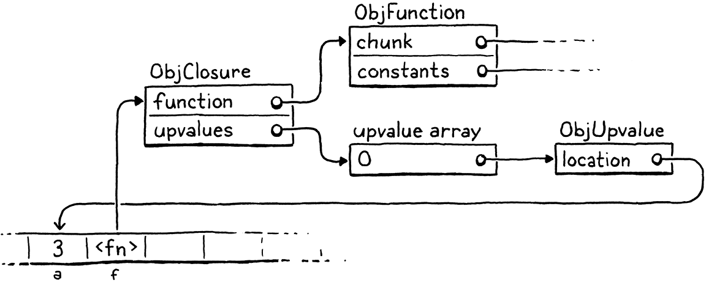
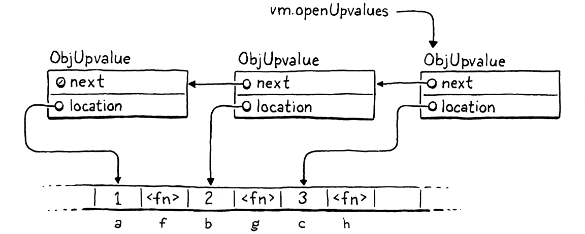

闭包
As the man said, for every complex problem there’s a simple solution, and it’s wrong.
Umberto Eco, Foucault’s Pendulum 正如那人所说，每一个复杂的问题都有一个简单的解决方案，而且是错误的。（翁贝托·艾柯，《傅科摆》）
Thanks to our diligent labor in the last chapter, we have a virtual machine with working functions. What it lacks is closures. Aside from global variables, which are their own breed of animal, a function has no way to reference a variable declared outside of its own body. 感谢我们在上一章的辛勤劳动，我们得到了一个拥有函数的虚拟机。现在虚拟机缺失的是闭包。除了全局变量（也就是函数的同类）之外，函数没有办法引用其函数体之外声明的变量。
var x = "global"; fun outer() { var x = "outer"; fun inner() { print x; } inner(); } outer();
Run this example now and it prints “global”. It’s supposed to print “outer”. To fix this, we need to include the entire lexical scope of all surrounding functions when resolving a variable. 现在运行这个示例，它打印的是“global”。但它应该打印“outer”。为了解决这个问题，我们需要在解析变量时涵盖所有外围函数的整个词法作用域。
This problem is harder in clox than it was in jlox because our bytecode VM stores locals on a stack. We used a stack because I claimed locals have stack semantics—variables are discarded in the reverse order that they are created. But with closures, that’s only mostly true. 这个问题在clox中比在jlox中更难解决，因为我们的字节码虚拟机将局部变量存储在栈中。我们使用堆栈是因为，我声称局部变量具有栈语义——变量被丢弃的顺序与创建的顺序正好相反。但对于闭包来说，这只在大部分情况下是正确的。
fun makeClosure() { var local = "local"; fun closure() { print local; } return closure; } var closure = makeClosure(); closure();
The outer function makeClosure() declares a variable, local. It also creates
an inner function, closure() that captures that variable. Then makeClosure()
returns a reference to that function. Since the closure escapes while holding on to the local variable, local must
outlive the function call where it was created.
外层函数makeClosure()声明了一个变量local。它还创建了一个内层函数closure()，用于捕获该变量。然后makeClosure()返回对该内层函数的引用。因为闭包要在保留局部变量的同时进行退出，所以local必须比创建它的函数调用存活更长的时间。
We could solve this problem by dynamically allocating memory for all local variables. That’s what jlox does by putting everything in those Environment objects that float around in Java’s heap. But we don’t want to. Using a stack is really fast. Most local variables are not captured by closures and do have stack semantics. It would suck to make all of those slower for the benefit of the rare local that is captured. 我们可以通过为所有局部变量动态地分配内存来解决这个问题。这就是jlox所做的，它将所有对象都放在Java堆中漂浮的Environment对象中。但我们并不想这样做。使用堆栈非常快。大多数局部变量都不会被闭包捕获，并且具有栈语义。如果为了极少数被捕获的局部变量而使所有变量的速度变慢，那就糟糕了。
This means a more complex approach than we used in our Java interpreter. Because some locals have very different lifetimes, we will have two implementation strategies. For locals that aren’t used in closures, we’ll keep them just as they are on the stack. When a local is captured by a closure, we’ll adopt another solution that lifts them onto the heap where they can live as long as needed. 这意味着一种比我们在Java解释器中所用的更复杂的方法。因为有些局部变量具有非常不同的生命周期，我们将有两种实现策略。对于那些不在闭包中使用的局部变量，我们将保持它们在栈中的原样。当某个局部变量被闭包捕获时，我们将采用另一种解决方案，将它们提升到堆中，在那里它们存活多久都可以。
Closures have been around since the early Lisp days when bytes of memory and CPU cycles were more precious than emeralds. Over the intervening decades, hackers devised all manner of ways to compile closures to optimized runtime representations. Some are more efficient but require a more complex compilation process than we could easily retrofit into clox. 闭包早在Lisp时代就已经存在了，当时内存字节和CPU周期比祖母绿还要珍贵。在过去的几十年里，黑客们设计了各种各样的方式来编译闭包，以优化运行时表示。有些方法更有效，但也需要更复杂的编译过程，我们无法轻易地在clox中加以改造。
The technique I explain here comes from the design of the Lua VM. It is fast, parsimonious with memory, and implemented with relatively little code. Even more impressive, it fits naturally into the single-pass compilers clox and Lua both use. It is somewhat intricate, though. It might take a while before all the pieces click together in your mind. We’ll build them one step at a time, and I’ll try to introduce the concepts in stages. 我在这里解释的技术来自于Lua虚拟机的设计。它速度快，内存占用少，并且只用相对较少的代码就实现了。更令人印象深刻的是，它很自然地适用于clox和Lua都在使用的单遍编译器。不过，它有些复杂，可能需要一段时间才能把所有的碎片在你的脑海中拼凑起来。我们将一步一步地构建它们，我将尝试分阶段介绍这些概念。
25 . 1Closure Objects 闭包对象
Our VM represents functions at runtime using ObjFunction. These objects are created by the front end during compilation. At runtime, all the VM does is load the function object from a constant table and bind it to a name. There is no operation to “create” a function at runtime. Much like string and number literals, they are constants instantiated purely at compile time. 我们的虚拟机在运行时使用ObjFunction表示函数。这些对象是由前端在编译时创建的。在运行时，虚拟机所做的就是从一个常量表中加载函数对象，并将其与一个名称绑定。在运行时，没有“创建”函数的操作。与字符串和数字字面量一样，它们是纯粹在编译时实例化的常量。
That made sense because all of the data that composes a function is known at compile time: the chunk of bytecode compiled from the function’s body, and the constants used in the body. Once we introduce closures, though, that representation is no longer sufficient. Take a gander at: 这是有道理的，因为组成函数的所有数据在编译时都是已知的：根据函数主体编译的字节码块，以及函数主体中使用的常量。一旦我们引入闭包，这种表示形式就不够了。请看一下：
fun makeClosure(value) { fun closure() { print value; } return closure; } var doughnut = makeClosure("doughnut"); var bagel = makeClosure("bagel"); doughnut(); bagel();
The makeClosure() function defines and returns a function. We call it twice
and get two closures back. They are created by the same nested function
declaration, closure, but close over different values. When we call the two
closures, each prints a different string. That implies we need some runtime
representation for a closure that captures the local variables surrounding the
function as they exist when the function declaration is executed, not just
when it is compiled.
makeClosure()函数会定义并返回一个函数。我们调用它两次，得到两个闭包。它们都是由相同的嵌套函数声明closure创建的，但关闭在不同的值上。当我们调用这两个闭包时，每个闭包都打印出不同的字符串。这意味着我们需要一些闭包运行时表示，以捕获函数外围的局部变量，因为这些变量要在函数声明被执行时存在，而不仅仅是在编译时存在。
We’ll work our way up to capturing variables, but a good first step is defining that object representation. Our existing ObjFunction type represents the “raw” compile-time state of a function declaration, since all closures created from a single declaration share the same code and constants. At runtime, when we execute a function declaration, we wrap the ObjFunction in a new ObjClosure structure. The latter has a reference to the underlying bare function along with runtime state for the variables the function closes over. 我们会逐步来捕获变量，但良好的第一步是定义对象表示形式。我们现有的ObjFunction类型表示了函数声明的“原始”编译时状态，因为从同一个声明中创建的所有闭包都共享相同的代码和常量。在运行时，当我们执行函数声明时，我们将ObjFunction包装进一个新的ObjClosure结构体中。后者有一个对底层裸函数的引用，以及该函数关闭的变量的运行时状态。

We’ll wrap every function in an ObjClosure, even if the function doesn’t actually close over and capture any surrounding local variables. This is a little wasteful, but it simplifies the VM because we can always assume that the function we’re calling is an ObjClosure. That new struct starts out like this: 我们将用ObjClosure包装每个函数，即使该函数实际上并没有关闭或捕获任何外围局部变量。这有点浪费，但它简化了虚拟机，因为我们总是可以认为我们正在调用的函数是一个ObjClosure。这个新结构体是这样开始的：
add after struct ObjString
typedef struct { Obj obj; ObjFunction* function; } ObjClosure;
Right now, it simply points to an ObjFunction and adds the necessary object header stuff. Grinding through the usual ceremony for adding a new object type to clox, we declare a C function to create a new closure. 现在，它只是简单地指向一个ObjFunction，并添加了必要的对象头内容。遵循向clox中添加新对象类型的常规步骤，我们声明一个C函数来创建新闭包。
} ObjClosure;
add after struct ObjClosure
ObjClosure* newClosure(ObjFunction* function);
ObjFunction* newFunction();
Then we implement it here: 然后我们在这里实现它：
add after allocateObject()
ObjClosure* newClosure(ObjFunction* function) { ObjClosure* closure = ALLOCATE_OBJ(ObjClosure, OBJ_CLOSURE); closure->function = function; return closure; }
It takes a pointer to the ObjFunction it wraps. It also initializes the type field to a new type. 它接受一个指向待包装ObjFunction的指针。它还将类型字段初始为一个新类型。
typedef enum {
in enum ObjType
OBJ_CLOSURE,
OBJ_FUNCTION,
And when we’re done with a closure, we release its memory. 以及，当我们用完闭包后，要释放其内存。
switch (object->type) {
in freeObject()
case OBJ_CLOSURE: { FREE(ObjClosure, object); break; }
case OBJ_FUNCTION: {
We free only the ObjClosure itself, not the ObjFunction. That’s because the closure doesn’t own the function. There may be multiple closures that all reference the same function, and none of them claims any special privilege over it. We can’t free the ObjFunction until all objects referencing it are gone—including even the surrounding function whose constant table contains it. Tracking that sounds tricky, and it is! That’s why we’ll write a garbage collector soon to manage it for us. 我们只释放ObjClosure本身，而不释放ObjFunction。这是因为闭包不拥有函数。可能会有多个闭包都引用了同一个函数，但没有一个闭包声称对该函数有任何特殊的权限。我们不能释放某个ObjFunction，直到引用它的所有对象全部消失——甚至包括那些常量表中包含该函数的外围函数。要跟踪这个信息听起来很棘手，事实也的确如此！这就是我们很快就会写一个垃圾收集器来管理它们的原因。
We also have the usual macros for checking a value’s type. 我们还有用于检查值类型的常用宏。
#define OBJ_TYPE(value) (AS_OBJ(value)->type)
#define IS_CLOSURE(value) isObjType(value, OBJ_CLOSURE)
#define IS_FUNCTION(value) isObjType(value, OBJ_FUNCTION)
And to cast a value: 还有值转换：
#define IS_STRING(value) isObjType(value, OBJ_STRING)
#define AS_CLOSURE(value) ((ObjClosure*)AS_OBJ(value))
#define AS_FUNCTION(value) ((ObjFunction*)AS_OBJ(value))
Closures are first-class objects, so you can print them. 闭包是第一类对象，因此你可以打印它们。
switch (OBJ_TYPE(value)) {
in printObject()
case OBJ_CLOSURE: printFunction(AS_CLOSURE(value)->function); break;
case OBJ_FUNCTION:
They display exactly as ObjFunction does. From the user’s perspective, the difference between ObjFunction and ObjClosure is purely a hidden implementation detail. With that out of the way, we have a working but empty representation for closures. 它们的显示和ObjFunction一样。从用户的角度来看，ObjFunction和ObjClosure之间的区别纯粹是一个隐藏的实现细节。有了这些，我们就有了一个可用但空白的闭包表示形式。
25 . 1 . 1Compiling to closure objects 编译为闭包对象
We have closure objects, but our VM never creates them. The next step is getting the compiler to emit instructions to tell the runtime when to create a new ObjClosure to wrap a given ObjFunction. This happens right at the end of a function declaration. 我们有了闭包对象，但是我们的VM还从未创建它们。下一步就是让编译器发出指令，告诉运行时何时创建一个新的ObjClosure来包装指定的ObjFunction。这就发生在函数声明的末尾。
ObjFunction* function = endCompiler();
in function()
replace 1 line
emitBytes(OP_CLOSURE, makeConstant(OBJ_VAL(function)));
}
Before, the final bytecode for a function declaration was a single OP_CONSTANT
instruction to load the compiled function from the surrounding function’s
constant table and push it onto the stack. Now we have a new instruction.
之前，函数声明的最后一个字节码是一条OP_CONSTANT指令，用于从外围函数的常量表中加载已编译的函数，并将其压入堆栈。现在我们有了一个新指令。
OP_CALL,
in enum OpCode
OP_CLOSURE,
OP_RETURN,
Like OP_CONSTANT, it takes a single operand that represents a constant table
index for the function. But when we get over to the runtime implementation, we
do something more interesting.
和OP_CONSTANT一样，它接受一个操作数，表示函数在常量表中的索引。但是等到进入运行时实现时，我们会做一些更有趣的事情。
First, let’s be diligent VM hackers and slot in disassembler support for the instruction. 首先，让我们做一个勤奋的虚拟机黑客，为该指令添加反汇编器支持。
case OP_CALL:
return byteInstruction("OP_CALL", chunk, offset);
in disassembleInstruction()
case OP_CLOSURE: { offset++; uint8_t constant = chunk->code[offset++]; printf("%-16s %4d ", "OP_CLOSURE", constant); printValue(chunk->constants.values[constant]); printf("\n"); return offset; }
case OP_RETURN:
There’s more going on here than we usually have in the disassembler. By the end
of the chapter, you’ll discover that OP_CLOSURE is quite an unusual
instruction. It’s straightforward right now—just a single byte operand—but
we’ll be adding to it. This code here anticipates that future.
这里做的事情比我们通常在反汇编程序中看到的要多。在本章结束时，你会发现OP_CLOSURE是一个相当不寻常的指令。它现在很简单——只有一个单字节的操作数——但我们会增加它的内容。这里的代码预示了未来。
25 . 1 . 2Interpreting function declarations 解释函数声明
Most of the work we need to do is in the runtime. We have to handle the new instruction, naturally. But we also need to touch every piece of code in the VM that works with ObjFunction and change it to use ObjClosure instead—function calls, call frames, etc. We’ll start with the instruction, though. 我们需要做的大部分工作是在运行时。我们必须处理新的指令，这是自然的。但是我们也需要触及虚拟机中每一段使用ObjFunction的代码，并将其改为使用ObjClosure——函数调用、调用帧，等等。不过，我们会从指令开始。
}
in run()
case OP_CLOSURE: { ObjFunction* function = AS_FUNCTION(READ_CONSTANT()); ObjClosure* closure = newClosure(function); push(OBJ_VAL(closure)); break; }
case OP_RETURN: {
Like the OP_CONSTANT instruction we used before, first we load the compiled
function from the constant table. The difference now is that we wrap that
function in a new ObjClosure and push the result onto the stack.
与我们前面使用的OP_CONSTANT类似，首先从常量表中加载已编译的函数。现在的不同之处在于，我们将该函数包装在一个新的ObjClosure中，并将结果压入堆栈。
Once you have a closure, you’ll eventually want to call it. 一旦你有了一个闭包，你最终就会想要调用它。
switch (OBJ_TYPE(callee)) {
in callValue()
replace 2 lines
case OBJ_CLOSURE: return call(AS_CLOSURE(callee), argCount);
case OBJ_NATIVE: {
We remove the code for calling objects whose type is OBJ_FUNCTION. Since we
wrap all functions in ObjClosures, the runtime will never try to invoke a bare
ObjFunction anymore. Those objects live only in constant tables and get
immediately wrapped in closures before anything else
sees them.
我们删除了调用OBJ_FUNCTION类型对象的代码。因为我们用ObjClosures包装了所有的函数，运行时永远不会再尝试调用原生的ObjFunction。这些原生函数对象只存在于常量表中，并在其它部分看到它们之前立即被封装在闭包中。
We replace the old code with very similar code for calling a closure instead.
The only difference is the type of object we pass to call(). The real changes
are over in that function. First, we update its signature.
我们用非常相似的调用闭包的代码来代替旧代码。唯一的区别是传递给call()的类型。真正的变化在这个函数中。首先，我们更新它的签名。
function call()
replace 1 line
static bool call(ObjClosure* closure, int argCount) {
if (argCount != function->arity) {
Then, in the body, we need to fix everything that referenced the function to handle the fact that we’ve introduced a layer of indirection. We start with the arity checking: 然后，在主体中，我们需要修正所有引用该函数的内容，以便处理我们引入中间层的问题。首先从元数检查开始：
static bool call(ObjClosure* closure, int argCount) {
in call()
replace 3 lines
if (argCount != closure->function->arity) { runtimeError("Expected %d arguments but got %d.", closure->function->arity, argCount);
return false;
The only change is that we unwrap the closure to get to the underlying function.
The next thing call() does is create a new CallFrame. We change that code to
store the closure in the CallFrame and get the bytecode pointer from the
closure’s function.
唯一的变化是，我们解开闭包获得底层函数。call()做的下一件事是创建一个新的CallFrame。我们修改这段代码，将闭包存储在CallFrame中，并从闭包内的函数中获取字节码指针。
CallFrame* frame = &vm.frames[vm.frameCount++];
in call()
replace 2 lines
frame->closure = closure; frame->ip = closure->function->chunk.code;
frame->slots = vm.stackTop - argCount - 1;
This necessitates changing the declaration of CallFrame too. 这就需要修改CallFrame的声明。
typedef struct {
in struct CallFrame
replace 1 line
ObjClosure* closure;
uint8_t* ip;
That change triggers a few other cascading changes. Every place in the VM that accessed CallFrame’s function needs to use a closure instead. First, the macro for reading a constant from the current function’s constant table: 这一更改触发了其它一些级联更改。VM中所有访问CallFrame中函数的地方都需要使用闭包来代替。首先，是从当前函数常量表中读取常量的宏：
(uint16_t)((frame->ip[-2] << 8) | frame->ip[-1]))
in run()
replace 2 lines
#define READ_CONSTANT() \ (frame->closure->function->chunk.constants.values[READ_BYTE()])
#define READ_STRING() AS_STRING(READ_CONSTANT())
When DEBUG_TRACE_EXECUTION is enabled, it needs to get to the chunk from the
closure.
当DEBUG_TRACE_EXECUTION被启用时，它需要从闭包中获取字节码块。
printf("\n");
in run()
replace 2 lines
disassembleInstruction(&frame->closure->function->chunk, (int)(frame->ip - frame->closure->function->chunk.code));
#endif
Likewise when reporting a runtime error: 同样地，在报告运行时错误时也是如此：
CallFrame* frame = &vm.frames[i];
in runtimeError()
replace 1 line
ObjFunction* function = frame->closure->function;
size_t instruction = frame->ip - function->chunk.code - 1;
Almost there. The last piece is the blob of code that sets up the very first CallFrame to begin executing the top-level code for a Lox script. 差不多完成了。最后一部分是用来设置第一个CallFrame以开始执行Lox脚本顶层程序的代码块。
push(OBJ_VAL(function));
in interpret()
replace 1 line
ObjClosure* closure = newClosure(function); pop(); push(OBJ_VAL(closure)); call(closure, 0);
return run();
The compiler still returns a raw ObjFunction when compiling a script. That’s fine, but it means we need to wrap it in an ObjClosure here, before the VM can execute it. 编译脚本时，编译器仍然返回一个原始的ObjFunction。这是可以的，但这意味着我们现在（也就是在VM能够执行它之前），需要将其包装在一个ObjClosure中。
We are back to a working interpreter. The user can’t tell any difference, but the compiler now generates code telling the VM to create a closure for each function declaration. Every time the VM executes a function declaration, it wraps the ObjFunction in a new ObjClosure. The rest of the VM now handles those ObjClosures floating around. That’s the boring stuff out of the way. Now we’re ready to make these closures actually do something. 我们又得到了一个可以工作的解释器。用户看不出有什么不同，但是编译器现在生成的代码会告诉虚拟机，为每一个函数声明创建一个闭包。每当VM执行一个函数声明时，它都会将ObjFunction包装在一个新的ObjClosure中。VM的其余部分会处理那些四处漂浮的ObjClosures。无聊的事情就到此为止吧。现在，我们准备让这些闭包实际做一些事情。
25 . 2Upvalues 上值
Our existing instructions for reading and writing local variables are limited to a single function’s stack window. Locals from a surrounding function are outside of the inner function’s window. We’re going to need some new instructions. 我们现有的读写局部变量的指令只限于单个函数的栈窗口。来自外围函数的局部变量是在内部函数的窗口之外。我们需要一些新的指令。
The easiest approach might be an instruction that takes a relative stack slot offset that can reach before the current function’s window. That would work if closed-over variables were always on the stack. But as we saw earlier, these variables sometimes outlive the function where they are declared. That means they won’t always be on the stack. 最简单的方法可能是一条指令，接受一个栈槽相对偏移量，可以访问当前函数窗口之前的位置。如果闭包变量始终在栈上，这是有效的。但正如我们前面看到的，这些变量的生存时间有时会比声明它们的函数更长。这意味着它们不会一直在栈中。
The next easiest approach, then, would be to take any local variable that gets closed over and have it always live on the heap. When the local variable declaration in the surrounding function is executed, the VM would allocate memory for it dynamically. That way it could live as long as needed. 然后，次简单的方法是获取闭包使用的任意局部变量，并让它始终存活在堆中。当执行外围函数中的局部变量声明时，虚拟机会为其动态分配内存。这样一来，它就可以根据需要长期存活。
This would be a fine approach if clox didn’t have a single-pass compiler. But that restriction we chose in our implementation makes things harder. Take a look at this example: 如果clox不是单遍编译器，这会是一种很好的方法。但是我们在实现中所选择的这种限制使事情变得更加困难。看看这个例子：
fun outer() { var x = 1; // (1) x = 2; // (2) fun inner() { // (3) print x; } inner(); }
Here, the compiler compiles the declaration of x at (1) and emits code for
the assignment at (2). It does that before reaching the declaration of
inner() at (3) and discovering that x is in fact closed over. We don’t
have an easy way to go back and fix that already-emitted code to treat x
specially. Instead, we want a solution that allows a closed-over variable to
live on the stack exactly like a normal local variable until the point that it
is closed over.
在这里，编译器在(1)处编译了x的声明，并在(2)处生成了赋值代码。这些发生在编译器到达在(3)处的inner()声明并发现x实际上被闭包引用之前。我们没有一种简单的方法来回溯并修复已生成的代码，以特殊处理x。相反，我们想要的解决方案是，在变量被关闭之前，允许它像常规的局部变量一样存在于栈中。
Fortunately, thanks to the Lua dev team, we have a solution. We use a level of indirection that they call an upvalue. An upvalue refers to a local variable in an enclosing function. Every closure maintains an array of upvalues, one for each surrounding local variable that the closure uses. 幸运的是，感谢Lua开发团队，我们有了一个解决方案。我们使用一种他们称之为上值的中间层。上值指的是一个闭包函数中的局部变量。每个闭包都维护一个上值数组，每个上值对应闭包使用的外围局部变量。
The upvalue points back into the stack to where the variable it captured lives.
When the closure needs to access a closed-over variable, it goes through the
corresponding upvalue to reach it. When a function declaration is first executed
and we create a closure for it, the VM creates the array of upvalues and wires
them up to “capture” the surrounding local variables that the closure needs.
上值指向栈中它所捕获的变量所在的位置。当闭包需要访问一个封闭的变量时，它会通过相应的上值(upvalues)得到该变量。当某个函数声明第一次被执行，而且我们为其创建闭包时，虚拟机会创建一个上值数组，并将其与闭包连接起来，以“捕获”闭包需要的外围局部变量。
For example, if we throw this program at clox, 举个例子，如果我们把这个程序扔给clox
{
var a = 3;
fun f() {
print a;
}
}
the compiler and runtime will conspire together to build up a set of objects in memory like this: 编译器和运行时会合力在内存中构建一组这样的对象：
That might look overwhelming, but fear not. We’ll work our way through it. The important part is that upvalues serve as the layer of indirection needed to continue to find a captured local variable even after it moves off the stack. But before we get to all that, let’s focus on compiling captured variables. 这可能看起来让人不知所措，但不要害怕。我们会用自己的方式来完成的。重要的部分是，上值充当了中间层，以便在被捕获的局部变量离开堆栈后能继续找到它。但在此之前，让我们先关注一下编译捕获的变量。
25 . 2 . 1Compiling upvalues 编译上值
As usual, we want to do as much work as possible during compilation to keep execution simple and fast. Since local variables are lexically scoped in Lox, we have enough knowledge at compile time to resolve which surrounding local variables a function accesses and where those locals are declared. That, in turn, means we know how many upvalues a closure needs, which variables they capture, and which stack slots contain those variables in the declaring function’s stack window. 像往常一样，我们希望在编译期间做尽可能多的工作，从而保持执行的简单快速。由于局部变量在Lox是具有词法作用域的，我们在编译时有足够的信息来确定某个函数访问了哪些外围的局部变量，以及这些局部变量是在哪里声明的。反过来，这意味着我们知道闭包需要多少个上值，它们捕获了哪个变量，以及在声明函数的栈窗口中的哪个栈槽中包含这些变量。
Currently, when the compiler resolves an identifier, it walks the block scopes for the current function from innermost to outermost. If we don’t find the variable in that function, we assume the variable must be a global. We don’t consider the local scopes of enclosing functions—they get skipped right over. The first change, then, is inserting a resolution step for those outer local scopes. 目前，当编译器解析一个标识符时，它会从最内层到最外层遍历当前函数的块作用域。如果我们没有在函数中找到该变量，我们就假定该变量一定是一个全局变量。我们不考虑封闭函数的局部作用域——它们会被直接跳过。那么，第一个变化就是为这些外围局部作用域插入一个解析步骤。
if (arg != -1) {
getOp = OP_GET_LOCAL;
setOp = OP_SET_LOCAL;
in namedVariable()
} else if ((arg = resolveUpvalue(current, &name)) != -1) { getOp = OP_GET_UPVALUE; setOp = OP_SET_UPVALUE;
} else {
This new resolveUpvalue() function looks for a local variable declared in any
of the surrounding functions. If it finds one, it returns an “upvalue index” for
that variable. (We’ll get into what that means later.) Otherwise, it returns -1
to indicate the variable wasn’t found. If it was found, we use these two new
instructions for reading or writing to the variable through its upvalue:
这个新的resolveUpvalue()函数会查找在任何外围函数中声明的局部变量。如果找到了，就会返回该变量的“上值索引”。（我们稍后会解释这是什么意思）否则，它会返回-1，表示没有找到该变量。如果找到变量，我们就使用这两条新指令，通过其上值对变量进行读写：
OP_SET_GLOBAL,
in enum OpCode
OP_GET_UPVALUE, OP_SET_UPVALUE,
OP_EQUAL,
We’re implementing this sort of top-down, so I’ll show you how these work at runtime soon. The part to focus on now is how the compiler actually resolves the identifier. 我们是自上而下实现的，所以我们很快会向你展示这些在运行时是如何工作的。现在要关注的部分是编译器实际上是如何解析标识符的。
add after resolveLocal()
static int resolveUpvalue(Compiler* compiler, Token* name) { if (compiler->enclosing == NULL) return -1; int local = resolveLocal(compiler->enclosing, name); if (local != -1) { return addUpvalue(compiler, (uint8_t)local, true); } return -1; }
We call this after failing to resolve a local variable in the current function’s
scope, so we know the variable isn’t in the current compiler. Recall that
Compiler stores a pointer to the Compiler for the enclosing function, and these
pointers form a linked chain that goes all the way to the root Compiler for the
top-level code. Thus, if the enclosing Compiler is NULL, we know we’ve reached
the outermost function without finding a local variable. The variable must be
global, so we return -1.
在当前函数作用域中解析局部变量失败后，我们才会调用这个方法，因此我们知道该变量不在当前编译器中。回顾一下，Compiler中存储了一个指向外层函数Compiler的指针，这些指针形成了一个链，一直到顶层代码的根Compiler。因此，如果外围的Compiler是NULL，我们就知道已经到达最外层的函数，而且没有找到局部变量。那么该变量一定是全局的，所以我们返回-1。
Otherwise, we try to resolve the identifier as a local variable in the enclosing compiler. In other words, we look for it right outside the current function. For example: 否则，我们尝试将标识符解析为一个在外围编译器中的局部变量。换句话说，我们在当前函数外面寻找它。举例来说：
fun outer() { var x = 1; fun inner() { print x; // (1) } inner(); }
When compiling the identifier expression at (1), resolveUpvalue() looks for
a local variable x declared in outer(). If found—like it is in this
example—then we’ve successfully resolved the variable. We create an upvalue
so that the inner function can access the variable through that. The upvalue is
created here:
当在(1)处编译标识符表达式时，resolveUpvalue()会查找在outer()中定义的局部变量x。如果找到了（就像本例中这样），那我们就成功解析了该变量。我们创建一个上值，以便内部函数可以通过它访问变量。上值是在这里创建的：
add after resolveLocal()
static int addUpvalue(Compiler* compiler, uint8_t index, bool isLocal) { int upvalueCount = compiler->function->upvalueCount; compiler->upvalues[upvalueCount].isLocal = isLocal; compiler->upvalues[upvalueCount].index = index; return compiler->function->upvalueCount++; }
The compiler keeps an array of upvalue structures to track the closed-over identifiers that it has resolved in the body of each function. Remember how the compiler’s Local array mirrors the stack slot indexes where locals live at runtime? This new upvalue array works the same way. The indexes in the compiler’s array match the indexes where upvalues will live in the ObjClosure at runtime. 编译器保留了一个上值结构的数组，用以跟踪每个函数主体中已解析的封闭标识符。还记得编译器的Local数组是如何反映局部变量在运行时所在的栈槽索引的吗？这个新的上值数组也使用相同的方式。编译器数组中的索引，与运行时ObjClosure中上值所在的索引相匹配。
This function adds a new upvalue to that array. It also keeps track of the number of upvalues the function uses. It stores that count directly in the ObjFunction itself because we’ll also need that number for use at runtime. 这个函数向数组中添加了一个新的上值。它还记录了该函数所使用的上值的数量。它直接在ObjFunction中存储了这个计数值，因为我们在运行时也需要使用这个数字。
The index field tracks the closed-over local variable’s slot index. That way
the compiler knows which variable in the enclosing function needs to be
captured. We’ll circle back to what that isLocal field is for before too long.
Finally, addUpvalue() returns the index of the created upvalue in the
function’s upvalue list. That index becomes the operand to the OP_GET_UPVALUE
and OP_SET_UPVALUE instructions.
index字段记录了封闭局部变量的栈槽索引。这样，编译器就知道需要捕获外部函数中的哪个变量。用不了多久，我们会回过头来讨论isLocal字段的用途。最后，addUpvalue()返回已创建的上值在函数的上值列表中的索引。这个索引会成为OP_GET_UPVALUE和OP_SET_UPVALUE指令的操作数。
That’s the basic idea for resolving upvalues, but the function isn’t fully baked. A closure may reference the same variable in a surrounding function multiple times. In that case, we don’t want to waste time and memory creating a separate upvalue for each identifier expression. To fix that, before we add a new upvalue, we first check to see if the function already has an upvalue that closes over that variable. 这就是解析上值的基本思路，但是这个函数还没有完全成熟。一个闭包可能会多次引用外围函数中的同一个变量。在这种情况下，我们不想浪费时间和内存来为每个标识符表达式创建一个单独的上值。为了解决这个问题，在我们添加新的上值之前，我们首先要检查该函数是否已经有封闭该变量的上值。
int upvalueCount = compiler->function->upvalueCount;
in addUpvalue()
for (int i = 0; i < upvalueCount; i++) { Upvalue* upvalue = &compiler->upvalues[i]; if (upvalue->index == index && upvalue->isLocal == isLocal) { return i; } }
compiler->upvalues[upvalueCount].isLocal = isLocal;
If we find an upvalue in the array whose slot index matches the one we’re adding, we just return that upvalue index and reuse it. Otherwise, we fall through and add the new upvalue. 如果我们在数组中找到与待添加的上值索引相匹配的上值，我们就返回该上值的索引并复用它。否则，我们就放弃，并添加新的上值。
These two functions access and modify a bunch of new state, so let’s define that. First, we add the upvalue count to ObjFunction. 这两个函数访问并修改了一些新的状态，所以我们来定义一下。首先，我们将上值计数添加到ObjFunction中。
int arity;
in struct ObjFunction
int upvalueCount;
Chunk chunk;
We’re conscientious C programmers, so we zero-initialize that when an ObjFunction is first allocated. 我们是负责的C程序员，所以当ObjFunction第一次被分配时，我们将其初始化为0。
function->arity = 0;
in newFunction()
function->upvalueCount = 0;
function->name = NULL;
In the compiler, we add a field for the upvalue array. 在编译器中，我们添加一个字段来存储上值数组。
int localCount;
in struct Compiler
Upvalue upvalues[UINT8_COUNT];
int scopeDepth;
For simplicity, I gave it a fixed size. The OP_GET_UPVALUE and
OP_SET_UPVALUE instructions encode an upvalue index using a single byte
operand, so there’s a restriction on how many upvalues a function can have—how many unique variables it can close over. Given that, we can afford a static
array that large. We also need to make sure the compiler doesn’t overflow that
limit.
为了简单起见，我给了它一个固定的大小。OP_GET_UPVALUE和OP_SET_UPVALUE指令使用一个单字节操作数来编码上值索引，所以一个函数可以有多少个上值（可以封闭多少个不同的变量）是有限制的。鉴于此，我们可以负担得起这么大的静态数组。我们还需要确保编译器不会超出这个限制。
if (upvalue->index == index && upvalue->isLocal == isLocal) {
return i;
}
}
in addUpvalue()
if (upvalueCount == UINT8_COUNT) { error("Too many closure variables in function."); return 0; }
compiler->upvalues[upvalueCount].isLocal = isLocal;
Finally, the Upvalue struct type itself. 最后，是Upvalue结构体本身。
add after struct Local
typedef struct { uint8_t index; bool isLocal; } Upvalue;
The index field stores which local slot the upvalue is capturing. The
isLocal field deserves its own section, which we’ll get to next.
index字段存储了上值捕获的是哪个局部变量槽。isLocal字段值得有自己的章节，我们接下来会讲到。
25 . 2 . 2Flattening upvalues 扁平化上值
In the example I showed before, the closure is accessing a variable declared in the immediately enclosing function. Lox also supports accessing local variables declared in any enclosing scope, as in: 在我之前展示的例子中，闭包访问的是在紧邻的外围函数中声明的变量。Lox还支持访问在任何外围作用域中声明的局部变量，如：
fun outer() { var x = 1; fun middle() { fun inner() { print x; } } }
Here, we’re accessing x in inner(). That variable is defined not in
middle(), but all the way out in outer(). We need to handle cases like this
too. You might think that this isn’t much harder since the variable will
simply be somewhere farther down on the stack. But consider this devious example:
这里，我们在inner()中访问x。这个变量不是在middle()中定义的，而是要一直追溯到outer()中。我们也需要处理这样的情况。你可能认为这并不难，因为变量只是位于栈中更下面的某个位置。但是考虑一下这个复杂的例子：
fun outer() { var x = "value"; fun middle() { fun inner() { print x; } print "create inner closure"; return inner; } print "return from outer"; return middle; } var mid = outer(); var in = mid(); in();
When you run this, it should print: 当你运行这段代码时，应该打印出来：
return from outer create inner closure value
I know, it’s convoluted. The important part is that outer()—where x is
declared—returns and pops all of its variables off the stack before the
declaration of inner() executes. So, at the point in time that we create the
closure for inner(), x is already off the stack.
我知道，这很复杂。重要的是，在inner()的声明执行之前，outer()（x被声明的地方）已经返回并弹出其所有变量。因此，在我们为inner()创建闭包时，x已经离开了堆栈。
Here, I traced out the execution flow for you: 下面，我为你绘制了执行流程：

See how x is popped ① before it is captured ② and then later
accessed ③? We really have two problems:
看到了吗，x在被捕获②之前，先被弹出 ①，随后又被访问③？我们确实有两个问题：
-
We need to resolve local variables that are declared in surrounding functions beyond the immediately enclosing one.
-
我们需要解析在紧邻的函数之外的外围函数中声明的局部变量。
-
我们需要能够捕获已经离开堆栈的变量。
-
We need to be able to capture variables that have already left the stack.
Fortunately, we’re in the middle of adding upvalues to the VM, and upvalues are explicitly designed for tracking variables that have escaped the stack. So, in a clever bit of self-reference, we can use upvalues to allow upvalues to capture variables declared outside of the immediately surrounding function. 幸运的是，我们正在向虚拟机中添加上值，而上值是明确为跟踪已退出栈的变量而设计的。因此，通过一个巧妙的自我引用，我们可以使用上值来允许上值捕获紧邻函数之外声明的变量。
The solution is to allow a closure to capture either a local variable or an
existing upvalue in the immediately enclosing function. If a deeply nested
function references a local variable declared several hops away, we’ll thread it
through all of the intermediate functions by having each function capture an
upvalue for the next function to grab.
解决方案是允许闭包捕获局部变量或紧邻函数中已有的上值。如果一个深度嵌套的函数引用了几跳之外声明的局部变量，我们让每个函数捕获一个上值，供下一个函数抓取，从而穿透所有的中间函数。


In the above example, middle() captures the local variable x in the
immediately enclosing function outer() and stores it in its own upvalue. It
does this even though middle() itself doesn’t reference x. Then, when the
declaration of inner() executes, its closure grabs the upvalue from the
ObjClosure for middle() that captured x. A function captures—either a
local or upvalue—only from the immediately surrounding function, which is
guaranteed to still be around at the point that the inner function declaration
executes.
在上面的例子中，middle()捕获了紧邻的外层函数outer()中的局部变量x，并将其存储在自己的上值中。即使middle()本身不引用x，它也会这样做。然后，当inner()的声明执行时，它的闭包会从已捕获x的middle()对应的ObjClosure中抓取上值。函数只会从紧邻的外层函数中捕获局部变量或上值，因为这些值在内部函数声明执行时仍然能够确保存在。
In order to implement this, resolveUpvalue() becomes recursive.
为了实现这一点，resolveUpvalue()变成递归的。
if (local != -1) {
return addUpvalue(compiler, (uint8_t)local, true);
}
in resolveUpvalue()
int upvalue = resolveUpvalue(compiler->enclosing, name); if (upvalue != -1) { return addUpvalue(compiler, (uint8_t)upvalue, false); }
return -1;
It’s only another three lines of code, but I found this function really challenging to get right the first time. This in spite of the fact that I wasn’t inventing anything new, just porting the concept over from Lua. Most recursive functions either do all their work before the recursive call (a pre-order traversal, or “on the way down”), or they do all the work after the recursive call (a post-order traversal, or “on the way back up”). This function does both. The recursive call is right in the middle. 这只是另外加了三行代码，但我发现这个函数真的很难一次就正确完成。尽管我并没有发明什么新东西，只是从Lua中移植了这个概念。大多数递归函数要么在递归调用之前完成所有工作（先序遍历，或“下行”），要么在递归调用之后完成所有工作（后续遍历，或“回退”）。这个函数两者都是，递归调用就在中间。
We’ll walk through it slowly. First, we look for a matching local variable in the enclosing function. If we find one, we capture that local and return. That’s the base case. 我们来慢慢看一下。首先，我们在外部函数中查找匹配的局部变量。如果我们找到了，就捕获该局部变量并返回。这就是基本情况。
Otherwise, we look for a local variable beyond the immediately enclosing
function. We do that by recursively calling resolveUpvalue() on the
enclosing compiler, not the current one. This series of resolveUpvalue()
calls works its way along the chain of nested compilers until it hits one of
the base cases—either it finds an actual local variable to capture or it
runs out of compilers.
否则，我们会在紧邻的函数之外寻找局部变量。我们通过递归地对外层编译器（而不是当前编译器）调用resolveUpvalue()来实现这一点。这一系列的resolveUpvalue()调用沿着嵌套的编译器链运行，直到遇见基本情况——要么找到一个事件的局部变量来捕获，要么是遍历完了所有编译器。
When a local variable is found, the most deeply nested
call to resolveUpvalue() captures it and returns the upvalue index. That
returns to the next call for the inner function declaration. That call captures
the upvalue from the surrounding function, and so on. As each nested call to
resolveUpvalue() returns, we drill back down into the innermost function
declaration where the identifier we are resolving appears. At each step along
the way, we add an upvalue to the intervening function and pass the resulting
upvalue index down to the next call.
当找到局部变量时，嵌套最深的resolveUpvalue()调用会捕获它并返回上值的索引。这就会返回到内层函数声明对应的下一级调用。该调用会捕获外层函数中的上值，以此类推。随着对resolveUpvalue()的每个嵌套调用的返回，我们会往下钻到最内层函数声明，即我们正在解析的标识符出现的地方。在这一过程中的每一步，我们都向中间函数添加一个上值，并将得到的上值索引向下传递给下一个调用。
It might help to walk through the original example when resolving x:
在解析x的时候，走一遍原始的例子可能会有帮助：

Note that the new call to addUpvalue() passes false for the isLocal
parameter. Now you see that that flag controls whether the closure captures a
local variable or an upvalue from the surrounding function.
请注意，对addUpvalue()的新调用为isLocal参数传递了false。现在你可以看到，该标志控制着闭包捕获的是局部变量还是来自外围函数的上值。
By the time the compiler reaches the end of a function declaration, every variable reference has been resolved as either a local, an upvalue, or a global. Each upvalue may in turn capture a local variable from the surrounding function, or an upvalue in the case of transitive closures. We finally have enough data to emit bytecode which creates a closure at runtime that captures all of the correct variables. 当编译器到达函数声明的结尾时，每个变量的引用都已经被解析为局部变量、上值或全局变量。每个上值可以依次从外围函数中捕获一个局部变量，或者在传递闭包的情况下捕获一个上值。我们终于有了足够的数据来生成字节码，该字节码在运行时创建一个捕获所有正确变量的闭包。
emitBytes(OP_CLOSURE, makeConstant(OBJ_VAL(function)));
in function()
for (int i = 0; i < function->upvalueCount; i++) { emitByte(compiler.upvalues[i].isLocal ? 1 : 0); emitByte(compiler.upvalues[i].index); }
}
The OP_CLOSURE instruction is unique in that it has a variably sized encoding.
For each upvalue the closure captures, there are two single-byte operands. Each
pair of operands specifies what that upvalue captures. If the first byte is one,
it captures a local variable in the enclosing function. If zero, it captures one
of the function’s upvalues. The next byte is the local slot or upvalue index to
capture.
OP_CLOSURE指令的独特之处在于，它是不定长编码的。对于闭包捕获的每个上值，都有两个单字节的操作数。每一对操作数都指定了上值捕获的内容。如果第一个字节是1，它捕获的就是外层函数中的一个局部变量。如果是0，它捕获的是函数的一个上值。下一个字节是要捕获局部变量插槽或上值索引。
This odd encoding means we need some bespoke support in the disassembly code
for OP_CLOSURE.
这种奇怪的编码意味着我们需要在反汇编程序中对OP_CLOSURE提供一些定制化的支持。
printf("\n");
in disassembleInstruction()
ObjFunction* function = AS_FUNCTION(
chunk->constants.values[constant]);
for (int j = 0; j < function->upvalueCount; j++) {
int isLocal = chunk->code[offset++];
int index = chunk->code[offset++];
printf("%04d | %s %d\n",
offset - 2, isLocal ? "local" : "upvalue", index);
}
return offset;
For example, take this script: 举例来说，请看这个脚本：
fun outer() { var a = 1; var b = 2; fun middle() { var c = 3; var d = 4; fun inner() { print a + c + b + d; } } }
If we disassemble the instruction that creates the closure for inner(), it
prints this:
如果我们反汇编为inner()创建闭包的指令，它会打印如下内容：
0004 9 OP_CLOSURE 2 <fn inner> 0006 | upvalue 0 0008 | local 1 0010 | upvalue 1 0012 | local 2
We have two other, simpler instructions to add disassembler support for. 我们还有两条更简单的指令需要添加反汇编支持。
case OP_SET_GLOBAL:
return constantInstruction("OP_SET_GLOBAL", chunk, offset);
in disassembleInstruction()
case OP_GET_UPVALUE: return byteInstruction("OP_GET_UPVALUE", chunk, offset); case OP_SET_UPVALUE: return byteInstruction("OP_SET_UPVALUE", chunk, offset);
case OP_EQUAL:
These both have a single-byte operand, so there’s nothing exciting going on. We
do need to add an include so the debug module can get to AS_FUNCTION().
这两条指令都是单字节操作数，所有没有什么有趣的内容。我们确实需要添加一个头文件引入，以便调试模块能够访问AS_FUNCTION()。
#include "debug.h"
#include "object.h"
#include "value.h"
With that, our compiler is where we want it. For each function declaration, it
outputs an OP_CLOSURE instruction followed by a series of operand byte pairs
for each upvalue it needs to capture at runtime. It’s time to hop over to that
side of the VM and get things running.
有了这些，我们的编译器就达到了我们想要的效果。对于每个函数声明，它都会输出一条OP_CLOSURE指令，后跟一系列操作数字节对，对应需要在运行时捕获的每个上值。现在是时候跳到虚拟机那边，让整个程序运转起来。
25 . 3Upvalue Objects Upvalue对象
Each OP_CLOSURE instruction is now followed by the series of bytes that
specify the upvalues the ObjClosure should own. Before we process those
operands, we need a runtime representation for upvalues.
现在每条OP_CLOSURE指令后面都跟着一系列字节，这些字节指定了ObjClosure应该拥有的上值。在处理这些操作数之前，我们需要一个上值的运行时表示。
add after struct ObjString
typedef struct ObjUpvalue { Obj obj; Value* location; } ObjUpvalue;
We know upvalues must manage closed-over variables that no longer live on the stack, which implies some amount of dynamic allocation. The easiest way to do that in our VM is by building on the object system we already have. That way, when we implement a garbage collector in the next chapter, the GC can manage memory for upvalues too. 我们知道上值必须管理已关闭的变量，这些变量不再存活于栈上，这意味着需要一些动态分配。在我们的虚拟机中，最简单的方法就是在已有的对象系统上进行构建。这样，当我们在下一章中实现垃圾收集器时，GC也可以管理上值的内存。
Thus, our runtime upvalue structure is an ObjUpvalue with the typical Obj header
field. Following that is a location field that points to the closed-over
variable. Note that this is a pointer to a Value, not a Value itself. It’s a
reference to a variable, not a value. This is important because it means
that when we assign to the variable the upvalue captures, we’re assigning to the
actual variable, not a copy. For example:
因此，我们的运行时上值结构是一个具有典型Obj头字段的ObjUpvalue。之后是一个指向关闭变量的location字段。注意，这是一个指向Value的指针，而不是Value本身。它是一个变量的引用，而不是一个值。这一点很重要，因为它意味着当我们向上值捕获的变量赋值时，我们是在给实际的变量赋值，而不是对一个副本赋值。举例来说：
fun outer() { var x = "before"; fun inner() { x = "assigned"; } inner(); print x; } outer();
This program should print “assigned” even though the closure assigns to x and
the surrounding function accesses it.
这个程序应该打印“assigned”，尽管是在闭包中对x赋值，而在外围函数中访问它。
Because upvalues are objects, we’ve got all the usual object machinery, starting with a constructor-like function: 因为上值是对象，我们已经有了所有常见的对象机制，首先是类似构造器的函数：
ObjString* copyString(const char* chars, int length);
add after copyString()
ObjUpvalue* newUpvalue(Value* slot);
void printObject(Value value);
It takes the address of the slot where the closed-over variable lives. Here is the implementation: 它接受的是封闭变量所在的槽的地址。下面是其实现：
add after copyString()
ObjUpvalue* newUpvalue(Value* slot) { ObjUpvalue* upvalue = ALLOCATE_OBJ(ObjUpvalue, OBJ_UPVALUE); upvalue->location = slot; return upvalue; }
We simply initialize the object and store the pointer. That requires a new object type. 我们简单地初始化对象并存储指针。这需要一个新的对象类型。
OBJ_STRING,
in enum ObjType
OBJ_UPVALUE
} ObjType;
And on the back side, a destructor-like function: 在后面，还有一个类似析构函数的方法：
FREE(ObjString, object);
break;
}
in freeObject()
case OBJ_UPVALUE: FREE(ObjUpvalue, object); break;
}
Multiple closures can close over the same variable, so ObjUpvalue does not own the variable it references. Thus, the only thing to free is the ObjUpvalue itself. 多个闭包可以关闭同一个变量，所以ObjUpvalue并不拥有它引用的变量。因此，唯一需要释放的就是ObjUpvalue本身。
And, finally, to print: 最后，是打印：
case OBJ_STRING:
printf("%s", AS_CSTRING(value));
break;
in printObject()
case OBJ_UPVALUE: printf("upvalue"); break;
}
Printing isn’t useful to end users. Upvalues are objects only so that we can take advantage of the VM’s memory management. They aren’t first-class values that a Lox user can directly access in a program. So this code will never actually execute . . . but it keeps the compiler from yelling at us about an unhandled switch case, so here we are. 打印对终端用户没有用。上值是对象，只是为了让我们能够利用虚拟机的内存管理。它们并不是Lox用户可以在程序中直接访问的一等公民。因此，这段代码实际上永远不会执行……但它使得编译器不会因为未处理的case分支而对我们大喊大叫，所以我们这样做了。
25 . 3 . 1Upvalues in closures 闭包中的上值
When I first introduced upvalues, I said each closure has an array of them. We’ve finally worked our way back to implementing that. 我在第一次介绍上值时，说过每个闭包中都有一个上值数组。我们终于回到了实现它的道路上。
ObjFunction* function;
in struct ObjClosure
ObjUpvalue** upvalues; int upvalueCount;
} ObjClosure;
Different closures may have different numbers of upvalues, so we need a dynamic array. The upvalues themselves are dynamically allocated too, so we end up with a double pointer—a pointer to a dynamically allocated array of pointers to upvalues. We also store the number of elements in the array. 不同的闭包可能会有不同数量的上值，所以我们需要一个动态数组。上值本身也是动态分配的，因此我们最终需要一个二级指针——一个指向动态分配的上值指针数组的指针。我们还会存储数组中的元素数量。
When we create an ObjClosure, we allocate an upvalue array of the proper size, which we determined at compile time and stored in the ObjFunction. 当我们创建ObjClosure时，会分配一个适当大小的上值数组，这个大小在编译时就已经确定并存储在ObjFunction中。
ObjClosure* newClosure(ObjFunction* function) {
in newClosure()
ObjUpvalue** upvalues = ALLOCATE(ObjUpvalue*, function->upvalueCount); for (int i = 0; i < function->upvalueCount; i++) { upvalues[i] = NULL; }
ObjClosure* closure = ALLOCATE_OBJ(ObjClosure, OBJ_CLOSURE);
Before creating the closure object itself, we allocate the array of upvalues and
initialize them all to NULL. This weird ceremony around memory is a careful
dance to please the (forthcoming) garbage collection deities. It ensures the
memory manager never sees uninitialized memory.
在创建闭包对象本身之前，我们分配了上值数组，并将其初始化为NULL。这种围绕内存的奇怪仪式是一场精心的舞蹈，为了取悦（即将到来的）垃圾收集器神灵。它可以确保内存管理器永远不会看到未初始化的内存。
Then we store the array in the new closure, as well as copy the count over from the ObjFunction. 然后，我们将数组存储在新的闭包中，并将计数值从ObjFunction中复制过来。
closure->function = function;
in newClosure()
closure->upvalues = upvalues; closure->upvalueCount = function->upvalueCount;
return closure;
When we free an ObjClosure, we also free the upvalue array. 当我们释放ObjClosure时，也需要释放上值数组。
case OBJ_CLOSURE: {
in freeObject()
ObjClosure* closure = (ObjClosure*)object; FREE_ARRAY(ObjUpvalue*, closure->upvalues, closure->upvalueCount);
FREE(ObjClosure, object);
ObjClosure does not own the ObjUpvalue objects themselves, but it does own the array containing pointers to those upvalues. ObjClosure并不拥有ObjUpvalue本身，但它确实拥有包含指向这些上值的指针的数组。
We fill the upvalue array over in the interpreter when it creates a closure.
This is where we walk through all of the operands after OP_CLOSURE to see what
kind of upvalue each slot captures.
当解释器创建闭包时，我们会填充上值数组。在这里，我们会遍历OP_CLOSURE之后的所有操作数，以查看每个槽捕获了什么样的上值。
push(OBJ_VAL(closure));
in run()
for (int i = 0; i < closure->upvalueCount; i++) { uint8_t isLocal = READ_BYTE(); uint8_t index = READ_BYTE(); if (isLocal) { closure->upvalues[i] = captureUpvalue(frame->slots + index); } else { closure->upvalues[i] = frame->closure->upvalues[index]; } }
break;
This code is the magic moment when a closure comes to life. We iterate over each
upvalue the closure expects. For each one, we read a pair of operand bytes. If
the upvalue closes over a local variable in the enclosing function, we let
captureUpvalue() do the work.
这段代码是闭包诞生的神奇时刻。我们遍历了闭包所期望的每个上值。对于每个上值，我们读取一对操作数字节。如果上值在外层函数的一个局部变量上关闭，我们就让captureUpvalue()完成这项工作。
Otherwise, we capture an upvalue from the surrounding function. An OP_CLOSURE
instruction is emitted at the end of a function declaration. At the moment that
we are executing that declaration, the current function is the surrounding
one. That means the current function’s closure is stored in the CallFrame at the
top of the callstack. So, to grab an upvalue from the enclosing function, we can
read it right from the frame local variable, which caches a reference to that
CallFrame.
否则，我们从外围函数中捕获一个上值。OP_CLOSURE指令是在函数声明的末尾生成。在我们执行该声明时，当前函数就是外围的函数。这意味着当前函数的闭包存储在调用栈顶部的CallFrame中。因此，要从外层函数中抓取上值，我们可以直接从局部变量frame中读取，该变量缓存了一个对CallFrame的引用。
Closing over a local variable is more interesting. Most of the work happens in a
separate function, but first we calculate the argument to pass to it. We need to
grab a pointer to the captured local’s slot in the surrounding function’s stack
window. That window begins at frame->slots, which points to slot zero. Adding
index offsets that to the local slot we want to capture. We pass that pointer
here:
关闭局部变量更有趣。大部分工作发生在一个单独的函数中，但首先我们要计算传递给它的参数。我们需要在外围函数的栈窗口中抓取一个指向捕获的局部变量槽的指针。该窗口起点在frame->slots，指向槽0。在其上添加index偏移量，以指向我们想要捕获的局部变量槽。我们将该指针传入这里：
add after callValue()
static ObjUpvalue* captureUpvalue(Value* local) { ObjUpvalue* createdUpvalue = newUpvalue(local); return createdUpvalue; }
This seems a little silly. All it does is create a new ObjUpvalue that captures the given stack slot and returns it. Did we need a separate function for this? Well, no, not yet. But you know we are going to end up sticking more code in here. 这看起来有点傻。它所做的就是创建一个新的捕获给定栈槽的ObjUpvalue，并将其返回。我们需要为此建一个单独的函数吗？嗯，不，现在还不用。但你懂的，我们最终会在这里插入更多代码。
First, let’s wrap up what we’re working on. Back in the interpreter code for
handling OP_CLOSURE, we eventually finish iterating through the upvalue
array and initialize each one. When that completes, we have a new closure with
an array full of upvalues pointing to variables.
首先，来总结一下我们的工作。回到处理OP_CLOSURE的解释器代码中，我们最终完成了对上值数组的迭代，并初始化了每个值。完成后，我们就有了一个新的闭包，它的数组中充满了指向变量的上值。
With that in hand, we can implement the instructions that work with those upvalues. 有了这个，我们就可以实现与这些上值相关的指令。
}
in run()
case OP_GET_UPVALUE: { uint8_t slot = READ_BYTE(); push(*frame->closure->upvalues[slot]->location); break; }
case OP_EQUAL: {
The operand is the index into the current function’s upvalue array. So we simply look up the corresponding upvalue and dereference its location pointer to read the value in that slot. Setting a variable is similar. 操作数是当前函数的上值数组的索引。因此，我们只需查找相应的上值，并对其位置指针解引用，以读取该槽中的值。设置变量也是如此。
}
in run()
case OP_SET_UPVALUE: { uint8_t slot = READ_BYTE(); *frame->closure->upvalues[slot]->location = peek(0); break; }
case OP_EQUAL: {
We take the value on top of the stack and store it
into the slot pointed to by the chosen upvalue. Just as with the instructions
for local variables, it’s important that these instructions are fast. User
programs are constantly reading and writing variables, so if that’s slow,
everything is slow. And, as usual, the way we make them fast is by keeping them
simple. These two new instructions are pretty good: no control flow, no complex
arithmetic, just a couple of pointer indirections and a push().
我们取栈顶的值，并将其存储的选中的上值所指向的槽中。就像局部变量的指令一样，这些指令的速度很重要。用户程序在不断的读写变量，因此如果这个操作很慢，一切都会很慢。而且，像往常一样，我们让它变快的方法就是保持简单。这两条新指令非常好：没有控制流，没有复杂的算术，只有几个指针间接引用和一个push()。
This is a milestone. As long as all of the variables remain on the stack, we have working closures. Try this: 这是一个里程碑。只要所有的变量都留存在栈上，闭包就可以工作。试试这个：
fun outer() { var x = "outside"; fun inner() { print x; } inner(); } outer();
Run this, and it correctly prints “outside”. 运行这个，它就会正确地打印“outside”。
25 . 4Closed Upvalues 关闭的上值
Of course, a key feature of closures is that they hold on to the variable as long as needed, even after the function that declares the variable has returned. Here’s another example that should work: 当然，闭包的一个关键特性是，只要有需要，它们就会一直保留这个变量，即使声明变量的函数已经返回。下面是另一个应该有效的例子：
fun outer() { var x = "outside"; fun inner() { print x; } return inner; } var closure = outer(); closure();
But if you run it right now . . . who knows what it does? At runtime, it will end up reading from a stack slot that no longer contains the closed-over variable. Like I’ve mentioned a few times, the crux of the issue is that variables in closures don’t have stack semantics. That means we’ve got to hoist them off the stack when the function where they were declared returns. This final section of the chapter does that. 但是如果你现在运行它……天知道它会做什么？在运行时，他会从不包含关闭变量的栈槽中读取数据。正如我多次提到的，问题的关键在于闭包中的变量不具有栈语义。这意味着当声明它们的函数返回时，我们必须将它们从栈中取出。本章的最后一节就是实现这一点的。
25 . 4 . 1Values and variables 值与变量
Before we get to writing code, I want to dig into an important semantic point. Does a closure close over a value or a variable? This isn’t purely an academic question. I’m not just splitting hairs. Consider: 在我们开始编写代码之前，我想深入探讨一个重要的语义问题。闭包关闭的是一个值还是一个变量？这并不是一个纯粹的学术问题。我并不是在胡搅蛮缠。考虑一下：
var globalSet; var globalGet; fun main() { var a = "initial"; fun set() { a = "updated"; } fun get() { print a; } globalSet = set; globalGet = get; } main(); globalSet(); globalGet();
The outer main() function creates two closures and stores them in global variables so that they outlive the execution of
main() itself. Both of those closures capture the same variable. The first
closure assigns a new value to it and the second closure reads the variable.
外层的main()方法创建了两个闭包，并将它们存储在全局变量中，这样它们的存活时间就比main()本身的执行时间更长。这两个闭包都捕获了相同的变量。第一个闭包为其赋值，第二个闭包则读取该变量的值。
What does the call to globalGet() print? If closures capture values then
each closure gets its own copy of a with the value that a had at the point
in time that the closure’s function declaration executed. The call to
globalSet() will modify set()’s copy of a, but get()’s copy will be
unaffected. Thus, the call to globalGet() will print “initial”.
调用globalGet()会打印什么？如果闭包捕获的是值，那么每个闭包都会获得自己的a副本，该副本的值为a在执行闭包函数声明的时间点上的值。对globalSet()的调用会修改set()中的a副本，但是get()中的副本不受影响。因此，对globalGet()的调用会打印“initial”。
If closures close over variables, then get() and set() will both capture—reference—the same mutable variable. When set() changes a, it changes
the same a that get() reads from. There is only one a. That, in turn,
implies the call to globalGet() will print “updated”.
如果闭包关闭的是变量，那么get()和set()都会捕获（引用）同一个可变变量。当set()修改a时，它改变的是get()所读取的那个a。这里只有一个a。这意味着对globalGet()的调用会打印“updated”。
Which is it? The answer for Lox and most other languages I know with closures is the latter. Closures capture variables. You can think of them as capturing the place the value lives. This is important to keep in mind as we deal with closed-over variables that are no longer on the stack. When a variable moves to the heap, we need to ensure that all closures capturing that variable retain a reference to its one new location. That way, when the variable is mutated, all closures see the change. 到底是哪一个呢？对于Lox和我所知的其它大多数带闭包的语言来说，答案是后者。闭包捕获的是变量。你可以把它们看作是对值所在位置的捕获。当我们处理不再留存于栈上的闭包变量时，这一点很重要，要牢牢记住。当一个变量移动到堆中时，我们需要确保所有捕获该变量的闭包都保留对其新位置的引用。这样一来，当变量发生变化时，所有闭包都能看到这个变化。
25 . 4 . 2Closing upvalues 关闭上值
We know that local variables always start out on the stack. This is faster, and lets our single-pass compiler emit code before it discovers the variable has been captured. We also know that closed-over variables need to move to the heap if the closure outlives the function where the captured variable is declared. 我们知道，局部变量总是从堆栈开始。这样做更快，并且可以让我们的单遍编译器在发现变量被捕获之前先生成字节码。我们还知道，如果闭包的存活时间超过声明被捕获变量的函数，那么封闭的变量就需要移动到堆中。
Following Lua, we’ll use open upvalue to refer to an upvalue that points to a local variable still on the stack. When a variable moves to the heap, we are closing the upvalue and the result is, naturally, a closed upvalue. The two questions we need to answer are: 跟随Lua，我们会使用开放上值来表示一个指向仍在栈中的局部变量的上值。当变量移动到堆中时，我们就关闭上值，而结果自然就是一个关闭的上值。我们需要回答两个问题：
-
Where on the heap does the closed-over variable go?
-
被关闭的变量放在堆中的什么位置？
-
我们什么时候关闭上值？
-
When do we close the upvalue?
The answer to the first question is easy. We already have a convenient object on the heap that represents a reference to a variable—ObjUpvalue itself. The closed-over variable will move into a new field right inside the ObjUpvalue struct. That way we don’t need to do any additional heap allocation to close an upvalue. 第一个问题的答案很简单。我们在堆上已经有了一个便利的对象，它代表了对某个变量（ObjUpvalue本身）的引用。被关闭的变量将移动到ObjUpvalue结构体中的一个新字段中。这样一来，我们不需要做任何额外的堆分配来关闭上值。
The second question is straightforward too. As long as the variable is on the stack, there may be code that refers to it there, and that code must work correctly. So the logical time to hoist the variable to the heap is as late as possible. If we move the local variable right when it goes out of scope, we are certain that no code after that point will try to access it from the stack. After the variable is out of scope, the compiler will have reported an error if any code tried to use it. 第二个问题也很直截了当。只要变量在栈中，就可能存在引用它的代码，而且这些代码必须能够正确工作。因此，将变量提取到堆上的逻辑时间越晚越好。如果我们在局部变量超出作用域时将其移出，我们可以肯定，在那之后没有任何代码会试图从栈中访问它。在变量超出作用域之后，如果有任何代码试图访问它，编译器就会报告一个错误。
The compiler already emits an OP_POP instruction when a local variable goes
out of scope. If a variable is captured by a closure, we will instead emit a
different instruction to hoist that variable out of the stack and into its
corresponding upvalue. To do that, the compiler needs to know which locals are closed over.
当局部变量超出作用域时，编译器已经生成了OP_POP指令。如果变量被某个闭包捕获，我们会发出一条不同的指令，将该变量从栈中提取到其对应的上值。为此，编译器需要知道哪些局部变量被关闭了。
The compiler already maintains an array of Upvalue structs for each local variable in the function to track exactly that state. That array is good for answering “Which variables does this closure use?” But it’s poorly suited for answering, “Does any function capture this local variable?” In particular, once the Compiler for some closure has finished, the Compiler for the enclosing function whose variable has been captured no longer has access to any of the upvalue state. 编译器已经为函数中的每个局部变量维护了一个Upvalue结构体的数组，以便准确地跟踪该状态。这个数组很好地回答了“这个闭包使用了哪个变量”，但他不适合回答“是否有任何函数捕获了这个局部变量？”特别是，一旦某个闭包的Compiler 执行完成，变量被捕获的外层函数的Compiler就不能再访问任何上值状态了。
In other words, the compiler maintains pointers from upvalues to the locals they capture, but not in the other direction. So we first need to add some extra tracking inside the existing Local struct so that we can tell if a given local is captured by a closure. 换句话说，编译器保持着从上值指向它们捕获的局部变量的指针，而没有相反方向的指针。所以，我们首先需要在现有的Local结构体中添加额外的跟踪信息，这样我们就能够判断某个给定的局部变量是否被某个闭包捕获。
int depth;
in struct Local
bool isCaptured;
} Local;
This field is true if the local is captured by any later nested function
declaration. Initially, all locals are not captured.
如果局部变量被后面嵌套的任何函数声明捕获，字段则为true。最初，所有的局部数据都没有被捕获。
local->depth = -1;
in addLocal()
local->isCaptured = false;
}
Likewise, the special “slot zero local” that the compiler implicitly declares is not captured. 同样地，编译器隐式声明的特殊的“槽0中的局部变量”不会被捕获。
local->depth = 0;
in initCompiler()
local->isCaptured = false;
local->name.start = "";
When resolving an identifier, if we end up creating an upvalue for a local variable, we mark it as captured. 在解析标识符时，如果我们最终为某个局部变量创建了一个上值，我们将其标记为已捕获。
if (local != -1) {
in resolveUpvalue()
compiler->enclosing->locals[local].isCaptured = true;
return addUpvalue(compiler, (uint8_t)local, true);
Now, at the end of a block scope when the compiler emits code to free the stack slots for the locals, we can tell which ones need to get hoisted onto the heap. We’ll use a new instruction for that. 现在，在块作用域的末尾，当编译器生成字节码来释放局部变量的栈槽时，我们可以判断哪些数据需要被提取到堆中。我们将使用一个新指令来实现这一点。
while (current->localCount > 0 &&
current->locals[current->localCount - 1].depth >
current->scopeDepth) {
in endScope()
replace 1 line
if (current->locals[current->localCount - 1].isCaptured) { emitByte(OP_CLOSE_UPVALUE); } else { emitByte(OP_POP); }
current->localCount--; }
The instruction requires no operand. We know that the variable will always be right on top of the stack at the point that this instruction executes. We declare the instruction. 这个指令不需要操作数。我们知道，在该指令执行时，变量一定在栈顶。我们来声明这条指令。
OP_CLOSURE,
in enum OpCode
OP_CLOSE_UPVALUE,
OP_RETURN,
And add trivial disassembler support for it: 并为它添加简单的反汇编支持：
}
in disassembleInstruction()
case OP_CLOSE_UPVALUE: return simpleInstruction("OP_CLOSE_UPVALUE", offset);
case OP_RETURN:
Excellent. Now the generated bytecode tells the runtime exactly when each captured local variable must move to the heap. Better, it does so only for the locals that are used by a closure and need this special treatment. This aligns with our general performance goal that we want users to pay only for functionality that they use. Variables that aren’t used by closures live and die entirely on the stack just as they did before. 太好了。现在，生成的字节码准确地告诉运行时，每个被捕获的局部变量必须移动到堆中的确切时间。更好的是，它只对被闭包使用并需要这种特殊处理的局部变量才会这样做。这与我们的总体性能目标是一致的，即我们希望用户只为他们使用的功能付费。那些不被闭包使用的变量只会出现于栈中，就像以前一样。
25 . 4 . 3Tracking open upvalues 跟踪开放的上值
Let’s move over to the runtime side. Before we can interpret OP_CLOSE_UPVALUE
instructions, we have an issue to resolve. Earlier, when I talked about whether
closures capture variables or values, I said it was important that if multiple
closures access the same variable that they end up with a reference to the
exact same storage location in memory. That way if one closure writes to the
variable, the other closure sees the change.
让我们转到运行时方面。在解释OP_CLOSE_UPVALUE指令之前，我们还有一个问题需要解决。之前，在谈到闭包捕获的是变量还是值时，我说过，如果多个闭包访问同一个变量，它们最终将引用内存中完全相同的存储位置，这一点很重要。这样一来，如果某个闭包对变量进行写入，另一个闭包就会看到这一变化。
Right now, if two closures capture the same local variable, the VM creates a separate Upvalue for each one. The necessary sharing is missing. When we move the variable off the stack, if we move it into only one of the upvalues, the other upvalue will have an orphaned value. 现在，如果两个闭包捕获同一个局部变量，虚拟机就会为每个闭包创建一个单独的Upvalue。必要的共享是缺失的。当我们把变量移出堆栈时，如果我们只是将它移入其中一个上值中，其它上值就会有一个孤儿值。
To fix that, whenever the VM needs an upvalue that captures a particular local variable slot, we will first search for an existing upvalue pointing to that slot. If found, we reuse that. The challenge is that all of the previously created upvalues are squirreled away inside the upvalue arrays of the various closures. Those closures could be anywhere in the VM’s memory. 为了解决这个问题，每当虚拟机需要一个捕获特定局部变量槽的上值时，我们会首先搜索指向该槽的现有上值。如果找到了，我们就重用它。难点在于，之前创建的所有上值都存储在各个闭包的上值数组中。这些闭包可能位于虚拟机内存中的任何位置。
The first step is to give the VM its own list of all open upvalues that point to variables still on the stack. Searching a list each time the VM needs an upvalue sounds like it might be slow, but in practice, it’s not bad. The number of variables on the stack that actually get closed over tends to be small. And function declarations that create closures are rarely on performance critical execution paths in the user’s program. 第一步是给虚拟机提供它自己的所有开放上值的列表，这些上值指向仍在栈中的变量。每次虚拟机需要一个上值时，都要搜索列表，这听起来似乎很慢，但是实际上，这并没有那么坏。栈中真正被关闭的变量的数量往往很少。而且创建闭包的函数声明很少出现在用户程序中的性能关键执行路径上。
Even better, we can order the list of open upvalues by the stack slot index they point to. The common case is that a slot has not already been captured—sharing variables between closures is uncommon—and closures tend to capture locals near the top of the stack. If we store the open upvalue array in stack slot order, as soon as we step past the slot where the local we’re capturing lives, we know it won’t be found. When that local is near the top of the stack, we can exit the loop pretty early. 更妙的是，我们可以根据开放上值所执行的栈槽索引对列表进行排序。常见的情况是，某个栈槽还没有被捕获（在闭包之间共享变量是不常见的），而闭包倾向于捕获靠近栈顶的局部变量。如果我们按照栈槽的顺序存储开放上值数组，一旦我们越过正在捕获的局部变量所在的槽，我们就知道它不会被找到。当这个局部变量在栈顶时，我们可以很早就退出循环。
Maintaining a sorted list requires inserting elements in the middle efficiently. That suggests using a linked list instead of a dynamic array. Since we defined the ObjUpvalue struct ourselves, the easiest implementation is an intrusive list that puts the next pointer right inside the ObjUpvalue struct itself. 维护有序列表需要能高效地在中间插入元素。这一点建议我们使用链表而不是动态数组。因为我们自己定义了ObjUpvalue结构体，最简单的实现是一个插入式列表，将指向下一元素的指针放在ObjUpvalue结构体本身中。
Value* location;
in struct ObjUpvalue
struct ObjUpvalue* next;
} ObjUpvalue;
When we allocate an upvalue, it is not attached to any list yet so the link is
NULL.
当我们分配一个上值时，它还没有附加到任何列表，因此链接是NULL。
upvalue->location = slot;
in newUpvalue()
upvalue->next = NULL;
return upvalue;
The VM owns the list, so the head pointer goes right inside the main VM struct. VM拥有该列表，因此头指针放在VM主结构体中。
Table strings;
in struct VM
ObjUpvalue* openUpvalues;
Obj* objects;
The list starts out empty. 列表在开始时为空。
vm.frameCount = 0;
in resetStack()
vm.openUpvalues = NULL;
}
Starting with the first upvalue pointed to by the VM, each open upvalue points to the next open upvalue that references a local variable farther down the stack. This script, for example, 从VM指向的第一个上值开始，每个开放上值都指向下一个引用了栈中靠下位置的局部变量的开放上值。以这个脚本为例
{
var a = 1;
fun f() {
print a;
}
var b = 2;
fun g() {
print b;
}
var c = 3;
fun h() {
print c;
}
}
should produce a series of linked upvalues like so: 它应该产生如下所示的一系列链接的上值：
Whenever we close over a local variable, before creating a new upvalue, we look for an existing one in the list. 每当关闭一个局部变量时，在创建新的上值之前，先在该列表中查找现有的上值。
static ObjUpvalue* captureUpvalue(Value* local) {
in captureUpvalue()
ObjUpvalue* prevUpvalue = NULL; ObjUpvalue* upvalue = vm.openUpvalues; while (upvalue != NULL && upvalue->location > local) { prevUpvalue = upvalue; upvalue = upvalue->next; } if (upvalue != NULL && upvalue->location == local) { return upvalue; }
ObjUpvalue* createdUpvalue = newUpvalue(local);
We start at the head of the list, which is the upvalue
closest to the top of the stack. We walk through the list, using a little
pointer comparison to iterate past every upvalue pointing to slots above the one
we’re looking for. While we do that, we keep track of the preceding upvalue on
the list. We’ll need to update that node’s next pointer if we end up inserting
a node after it.
我们从列表的头部开始，它是最接近栈顶的上值。我们遍历列表，使用一个小小的指针比较，对每一个指向的槽位高于当前查找的位置的上值进行迭代。当我们这样做时，我们要跟踪列表中前面的上值。如果我们在某个节点后面插入了一个节点，就需要更新该节点的next指针。
There are three reasons we can exit the loop: 我们有三个原因可以退出循环：
-
The local slot we stopped at *is* the slot we’re looking for. We found an existing upvalue capturing the variable, so we reuse that upvalue. 我们停止时的局部变量槽是我们要找的槽。我在找到了一个现有的上值捕获了这个变量，因此我们重用这个上值。
-
We ran out of upvalues to search. When
upvalueisNULL, it means every open upvalue in the list points to locals above the slot we’re looking for, or (more likely) the upvalue list is empty. Either way, we didn’t find an upvalue for our slot. 我们找不到需要搜索的上值了。当upvalue为NULL时，这意味着列表中每个开放上值都指向位于我们要找的槽之上的局部变量，或者（更可能是）上值列表是空的。无论怎样，我们都没有找到对应该槽的上值。 -
We found an upvalue whose local slot is *below* the one we’re looking for. Since the list is sorted, that means we’ve gone past the slot we are closing over, and thus there must not be an existing upvalue for it. 我们找到了一个上值，其局部变量槽低于我们正查找的槽位。因为列表是有序的，这意味着我们已经超过了正在关闭的槽，因此肯定没有对应该槽的已有上值。
-
The local slot we stopped at is the slot we’re looking for. We found an existing upvalue capturing the variable, so we reuse that upvalue.
-
We ran out of upvalues to search. When
upvalueisNULL, it means every open upvalue in the list points to locals above the slot we’re looking for, or (more likely) the upvalue list is empty. Either way, we didn’t find an upvalue for our slot. -
We found an upvalue whose local slot is below the one we’re looking for. Since the list is sorted, that means we’ve gone past the slot we are closing over, and thus there must not be an existing upvalue for it.
In the first case, we’re done and we’ve returned. Otherwise, we create a new upvalue for our local slot and insert it into the list at the right location. 在第一种情况下，我们已经完成并且返回了。其它情况下，我们为局部变量槽创建一个新的上值，并将其插入到列表中的正确位置。
ObjUpvalue* createdUpvalue = newUpvalue(local);
in captureUpvalue()
createdUpvalue->next = upvalue; if (prevUpvalue == NULL) { vm.openUpvalues = createdUpvalue; } else { prevUpvalue->next = createdUpvalue; }
return createdUpvalue;
The current incarnation of this function already creates the upvalue, so we only
need to add code to insert the upvalue into the list. We exited the list
traversal by either going past the end of the list, or by stopping on the first
upvalue whose stack slot is below the one we’re looking for. In either case,
that means we need to insert the new upvalue before the object pointed at by
upvalue (which may be NULL if we hit the end of the list).
这个函数的当前版本已经创建了上值，我们只需要添加代码将上值插入到列表中。我们退出列表遍历的原因，要么是到达了列表末尾，要么是停在了第一个栈槽低于待查找槽位的上值。无论哪种情况，这都意味着我们需要在upvalue指向的对象（如果到达列表的末尾，则该对象可能是NULL）之前插入新的上值。
As you may have learned in Data Structures 101, to insert a node into a linked
list, you set the next pointer of the previous node to point to your new one.
We have been conveniently keeping track of that preceding node as we walked the
list. We also need to handle the special case where
we are inserting a new upvalue at the head of the list, in which case the “next”
pointer is the VM’s head pointer.
正如你在《数据结构101》中所学到的，要将一个节点插入到链表中，你需要将前一个节点的next指针指向新的节点。当我们遍历列表时，我们一直很方便地跟踪着前面的节点。我们还需要处理一种特殊情况，即我们在列表头部插入一个新的上值，在这种情况下，“next”指针是VM的头指针。
With this updated function, the VM now ensures that there is only ever a single ObjUpvalue for any given local slot. If two closures capture the same variable, they will get the same upvalue. We’re ready to move those upvalues off the stack now. 有了这个升级版函数，VM现在可以确保每个指定的局部变量槽都只有一个ObjUpvalue。如果两个闭包捕获了相同的变量，它们会得到相同的上值。现在，我们准备将这些上值从栈中移出。
25 . 4 . 4Closing upvalues at runtime 在运行时关闭上值
The compiler helpfully emits an OP_CLOSE_UPVALUE instruction to tell the VM
exactly when a local variable should be hoisted onto the heap. Executing that
instruction is the interpreter’s responsibility.
编译器会生成一个有用的OP_CLOSE_UPVALUE指令，以准确地告知VM何时将局部变量提取到堆中。执行该指令是解释器的责任。
}
in run()
case OP_CLOSE_UPVALUE: closeUpvalues(vm.stackTop - 1); pop(); break;
case OP_RETURN: {
When we reach the instruction, the variable we are hoisting is right on top of
the stack. We call a helper function, passing the address of that stack slot.
That function is responsible for closing the upvalue and moving the local from
the stack to the heap. After that, the VM is free to discard the stack slot,
which it does by calling pop().
当我们到达该指令时，我们要提取的变量就在栈顶。我们调用一个辅助函数，传入栈槽的地址。该函数负责关闭上值，并将局部变量从栈中移动到堆上。之后，VM就可以自由地丢弃栈槽，这是通过调用pop()实现的。
The fun stuff happens here: 有趣的事情发生在这里：
add after captureUpvalue()
static void closeUpvalues(Value* last) { while (vm.openUpvalues != NULL && vm.openUpvalues->location >= last) { ObjUpvalue* upvalue = vm.openUpvalues; upvalue->closed = *upvalue->location; upvalue->location = &upvalue->closed; vm.openUpvalues = upvalue->next; } }
This function takes a pointer to a stack slot. It closes every open upvalue it can find that points to that slot or any slot above it on the stack. Right now, we pass a pointer only to the top slot on the stack, so the “or above it” part doesn’t come into play, but it will soon. 这个函数接受一个指向栈槽的指针。它会关闭它能找到的指向该槽或栈上任何位于该槽上方的所有开放上值。现在，我们只传递了一个指向栈顶的指针，所以“或其上方”的部分没有发挥作用，但它很快就会起作用了。
To do this, we walk the VM’s list of open upvalues, again from top to bottom. If an upvalue’s location points into the range of slots we’re closing, we close the upvalue. Otherwise, once we reach an upvalue outside of the range, we know the rest will be too, so we stop iterating. 为此，我们再次从上到下遍历VM的开放上值列表。如果某个上值的位置指向我们要关闭的槽位范围，则关闭该上值。否则，一旦我们遇到范围之外的上值，我们知道其它上值也在范围之外，所以我们停止迭代。
The way an upvalue gets closed is pretty cool. First,
we copy the variable’s value into the closed field in the ObjUpvalue. That’s
where closed-over variables live on the heap. The OP_GET_UPVALUE and
OP_SET_UPVALUE instructions need to look for the variable there after it’s
been moved. We could add some conditional logic in the interpreter code for
those instructions to check some flag for whether the upvalue is open or closed.
关闭上值的方式非常酷。首先，我们将变量的值复制到ObjUpvalue的closed字段。这就是被关闭的变量在堆中的位置。在变量被移动之后，OP_GET_UPVALUE和OP_SET_UPVALUE指令需要在那里查找它。我们可以在解释器代码中为这些指令添加一些条件逻辑，检查一些标志，以确定上值是开放的还是关闭的。
But there is already a level of indirection in play—those instructions
dereference the location pointer to get to the variable’s value. When the
variable moves from the stack to the closed field, we simply update that
location to the address of the ObjUpvalue’s own closed field.
但是已经有一个中间层在起作用了——这些指令对location指针解引用以获取变量的值。当变量从栈移动到closed字段时，我们只需将location更新为ObjUpvalue自己的closed字段。

We don’t need to change how OP_GET_UPVALUE and OP_SET_UPVALUE are
interpreted at all. That keeps them simple, which in turn keeps them fast. We do
need to add the new field to ObjUpvalue, though.
我们根本不需要改变OP_GET_UPVALUE和OP_SET_UPVALUE的解释方式。这使得它们保持简单，反过来又使它们保持快速。不过，我们确实需要向ObjUpvalue添加新的字段。
Value* location;
in struct ObjUpvalue
Value closed;
struct ObjUpvalue* next;
And we should zero it out when we create an ObjUpvalue so there’s no uninitialized memory floating around. 当我们创建一个ObjUpvalue时，应该将其置为0，这样就不会有未初始化的内存了。
ObjUpvalue* upvalue = ALLOCATE_OBJ(ObjUpvalue, OBJ_UPVALUE);
in newUpvalue()
upvalue->closed = NIL_VAL;
upvalue->location = slot;
Whenever the compiler reaches the end of a block, it discards all local
variables in that block and emits an OP_CLOSE_UPVALUE for each local variable
that was closed over. The compiler does not emit any
instructions at the end of the outermost block scope that defines a function
body. That scope contains the function’s parameters and any locals declared
immediately inside the function. Those need to get closed too.
每当编译器到达一个块的末尾时，它就会丢弃该代码块中的所有局部变量，并为每个关闭的局部变量生成一个OP_CLOSE_UPVALUE指令。编译器不会在定义某个函数主体的最外层块作用域的末尾生成任何指令。这个作用域包含函数的形参和函数内部声明的任何局部变量。这些也需要被关闭。
This is the reason closeUpvalues() accepts a pointer to a stack slot. When a
function returns, we call that same helper and pass in the first stack slot
owned by the function.
这就是closeUpvalues()接受一个指向栈槽的指针的原因。当函数返回时，我们调用相同的辅助函数，并传入函数拥有的第一个栈槽。
Value result = pop();
in run()
closeUpvalues(frame->slots);
vm.frameCount--;
By passing the first slot in the function’s stack window, we close every remaining open upvalue owned by the returning function. And with that, we now have a fully functioning closure implementation. Closed-over variables live as long as they are needed by the functions that capture them. 通过传递函数栈窗口中的第一个槽，我们关闭了正在返回的函数所拥有的所有剩余的开放上值。有了这些，我们现在就有了一个功能齐全的闭包实现。只要捕获变量的函数需要，被关闭的变量就一直存在。
This was a lot of work! In jlox, closures fell out naturally from our environment representation. In clox, we had to add a lot of code—new bytecode instructions, more data structures in the compiler, and new runtime objects. The VM very much treats variables in closures as different from other variables. 这是一项艰巨的工作！在jlox中，闭包很自然地从我们的环境表示形式中分离出来。在clox中，我们必须添加大量的代码——新的字节码指令、编译器中的更多数据结构和新的运行时对象。VM在很大程度上将闭包中的变量与其它变量进行区别对待。
There is a rationale for that. In terms of implementation complexity, jlox gave us closures “for free”. But in terms of performance, jlox’s closures are anything but. By allocating all environments on the heap, jlox pays a significant performance price for all local variables, even the majority which are never captured by closures. 这是有道理的。就实现复杂性而言，jlox“免费”为我们提供了闭包。但是就性能而言，jlox的闭包完全不是这样。由于在堆上分配所有环境，jlox为所有局部变量付出了显著的性能代价，甚至是未被闭包捕获的大部分变量。
With clox, we have a more complex system, but that allows us to tailor the implementation to fit the two use patterns we observe for local variables. For most variables which do have stack semantics, we allocate them entirely on the stack which is simple and fast. Then, for the few local variables where that doesn’t work, we have a second slower path we can opt in to as needed. 在clox中，我们有一个更复杂的系统，但这允许我们对实现进行调整以适应我们观察到的局部变量的两种使用模式。对于大多数具有堆栈语义的变量，我们完全可用在栈中分配，这既简单又快速。然后，对于少数不适用的局部变量，我们可以根据需要选择第二条较慢的路径。
Fortunately, users don’t perceive the complexity. From their perspective, local variables in Lox are simple and uniform. The language itself is as simple as jlox’s implementation. But under the hood, clox is watching what the user does and optimizing for their specific uses. As your language implementations grow in sophistication, you’ll find yourself doing this more. A large fraction of “optimization” is about adding special case code that detects certain uses and provides a custom-built, faster path for code that fits that pattern. 幸运的是，用户并不会察觉到这种复杂性。在他们看来，Lox中的局部变量简单而统一。语言本身就像jlox一样简单。但在内部，clox会观察用户的行为，并针对他们的具体用途进行优化。随着你的语言实现越来越复杂，你会发现自己要做的事情越来越多。“优化”的很大一部分是关于添加特殊情况的代码，以检测特定的使用，并为符合该模式的代码提供定制化的、更快速的路径。
We have lexical scoping fully working in clox now, which is a major milestone.
And, now that we have functions and variables with complex lifetimes, we also
have a lot of objects floating around in clox’s heap, with a web of pointers
stringing them together. The next step is figuring out how to manage that
memory so that we can free some of those objects when they’re no longer needed.
我们现在已经在clox中完全实现了词法作用域，这是一个重要的里程碑。而且，现在我们有了具有复杂生命周期的函数和变量，我们也要了很多漂浮在clox堆中的对象，并有一个指针网络将它们串联起来。下一步是弄清楚如何管理这些内存，以便我们可以在不再需要这些对象的时候释放它们。
: 毕竟，C和Java使用栈来存储局部变量是有原因的。
: 搜索“闭包转换 closure conversion”和“Lambda提升 lambda lifting”就可以开始探索了。
: 换句话说，Lox中的函数声明是一种字面量——定义某个内置类型的常量值的一段语法。
: Lua实现中将包含字节码的原始函数对象称为“原型”，这个一个很好的形容词，只不过这个词也被重载以指代原型继承。
: 或许我应该定义一个宏，以便更容易地生成这些宏。也许这有点太玄了。
: 这段代码看起来有点傻，因为我们仍然把原始的ObjFunction压入栈中，然后在创建完闭包之后弹出它，然后再将闭包压入栈。为什么要把ObjFunction放在这里呢？像往常一样，当你看到奇怪的堆栈操作发生时，它是为了让即将到来的垃圾回收器知道一些堆分配的对象。
: 它最终可能会是一个完全未定义的变量，甚至不是全局变量。但是在Lox中，我们直到运行时才能检测到这个错误，所以从编译器的角度看，它是“期望是全局的”。
: 就像常量和函数元数一样，上值计数也是连接编译器与运行时的一些小数据。
: 当然，另一种基本情况是，没有外层函数。在这种情况下，该变量不能在词法上解析，并被当作全局变量处理。
: 每次递归调用resolveUpvalue()都会走出一层函数嵌套。因此，内部的递归调用指向的是外部的嵌套声明。查找局部变量的最内层的resolveUpvalue()递归调用对应的将是最外层的函数，就是实际声明该变量的外层函数的内部。
: 在闭包中存储上值数量是多余的，因为ObjClosure引用的ObjFunction也保存了这个数量。通常，这类奇怪的代码是为了适应GC。在闭包对应的ObjFunction已经被释放后，收集器可能也需要知道ObjClosure对应上值数组的大小。
: 设置指令不会从栈中弹出值，因为，请记住，赋值在Lox中是一个表达式。所以赋值的结果（所赋的值）需要保留在栈中，供外围的表达式使用。
: 如果Lox不允许赋值，这就是一个学术问题。
: 我使用了多个全局变量的事实并不重要。我需要某种方式从一个函数中返回两个值。而在Lox中没有任何形式的聚合类型，我的选择很有限。
: 这里 的“之后”，指的是词法或文本意义上的——在包含关闭变量的声明语句的代码块的}之后的代码。
: 编译器不会弹出参数和在函数体中声明的局部变量。这些我们也会在运行时处理。
: 在本书的后面部分，用户将有可能捕获这个变量。这里只是建立一些预期。
: 如果某个闭包从外围函数中捕获了一个上值，那么虚拟机确实会共享上值。嵌套的情况下，工作正常。但是如果两个同级闭包捕获了同一个局部变量，它们会各自创建一个单独的ObjUpvalue。
: 闭包经常在热循环中被调用。想想传递给集合的典型高阶函数，如map()和filter()。这应该是很的。但是创建闭包的函数声明只发生一次，而且通常是在循环之外。
: 这是个单链表。除了从头指针开始遍历，我们没有其它选择。
: 还有一种更简短的实现，通过使用一个指向指针的指针，来统一处理更新头部指针或前一个上值的next指针两种情况，但这种代码几乎会让所有未达到指针专业水平的人感到困惑。我选择了基本的if语句的方法。
: 我并不是在自夸。这都是Lua开发团队的创新。
: 没有什么阻止我们在编译器中关闭最外层的函数作用域，并生成OP_POP和OP_CLOSE_UPVALUE指令。这样做只是没有必要，因为运行时在弹出调用帧时，隐式地丢弃了函数使用的所有栈槽。
25 . 5习题
-
Wrapping every ObjFunction in an ObjClosure introduces a level of indirection that has a performance cost. That cost isn’t necessary for functions that do not close over any variables, but it does let the runtime treat all calls uniformly.
Challenges
-
Wrapping every ObjFunction in an ObjClosure introduces a level of indirection that has a performance cost. That cost isn’t necessary for functions that do not close over any variables, but it does let the runtime treat all calls uniformly.
Change clox to only wrap functions in ObjClosures that need upvalues. How does the code complexity and performance compare to always wrapping functions? Take care to benchmark programs that do and do not use closures. How should you weight the importance of each benchmark? If one gets slower and one faster, how do you decide what trade-off to make to choose an implementation strategy? 将每个ObjFunction 包装在ObjClosure中，会引人一个有性能代价的中间层。这个代价对于那些没有关闭任何变量的函数来说是不必要的，但它确实让运行时能够统一处理所有的调用。 将clox改为只用ObjClosure包装需要上值的函数。与包装所有函数相比，代码的复杂性与性能如何？请注意对使用闭包和不使用闭包的程序进行基准测试。你应该如何衡量每个基准的重要性？如果一个变慢了，另一个变快了，你决定通过什么权衡来选择实现策略？
-
Read the design note below. I’ll wait. Now, how do you think Lox should behave? Change the implementation to create a new variable for each loop iteration. 请阅读下面的设计笔记。我在这里等着。现在，你觉得Lox应该怎么做？改变实现方式，为每个循环迭代创建一个新的变量。
-
A famous koan teaches us that “objects are a poor man’s closure” (and vice versa). Our VM doesn’t support objects yet, but now that we have closures we can approximate them. Using closures, write a Lox program that models two-dimensional vector “objects”. It should:
-
Read the design note below. I’ll wait. Now, how do you think Lox should behave? Change the implementation to create a new variable for each loop iteration.
-
A famous koan teaches us that “objects are a poor man’s closure” (and vice versa). Our VM doesn’t support objects yet, but now that we have closures we can approximate them. Using closures, write a Lox program that models two-dimensional vector “objects”. It should:
-
Define a “constructor” function to create a new vector with the given x and y coordinates.
-
Provide “methods” to access the x and y coordinates of values returned from that constructor.
-
Define an addition “method” that adds two vectors and produces a third.
-
Design Note: Closing Over the Loop Variable
Closures capture variables. When two closures capture the same variable, they share a reference to the same underlying storage location. This fact is visible when new values are assigned to the variable. Obviously, if two closures capture different variables, there is no sharing. 闭包捕获变量。当两个闭包捕获相同的变量时，它们共享对相同的底层存储位置的引用。当将新值赋给该变量时，这一事实是可见的。显然，如果两个闭包捕获不同的变量，就不存在共享。
var globalOne; var globalTwo; fun main() { { var a = "one"; fun one() { print a; } globalOne = one; } { var a = "two"; fun two() { print a; } globalTwo = two; } } main(); globalOne(); globalTwo();
This prints “one” then “two”. In this example, it’s pretty clear that the two
a variables are different. But it’s not always so obvious. Consider:
这里会打印“one”然后是“two”。在这个例子中，很明显两个a变量是不同的。但一点这并不总是那么明显。考虑一下：
var globalOne; var globalTwo; fun main() { for (var a = 1; a <= 2; a = a + 1) { fun closure() { print a; } if (globalOne == nil) { globalOne = closure; } else { globalTwo = closure; } } } main(); globalOne(); globalTwo();
The code is convoluted because Lox has no collection types. The important part
is that the main() function does two iterations of a for loop. Each time
through the loop, it creates a closure that captures the loop variable. It
stores the first closure in globalOne and the second in globalTwo.
这段代码很复杂，因为Lox没有集合类型。重要的部分是，main()函数进行了for循环的两次迭代。每次循环执行时，它都会创建一个捕获循环变量的闭包。它将第一个闭包存储在globalOne中，并将第二个闭包存储在globalTwo中。
There are definitely two different closures. Do they close over two different
variables? Is there only one a for the entire duration of the loop, or does
each iteration get its own distinct a variable?
这无疑是两个不同的闭包。它们是在两个不同的变量上闭合的吗？在整个循环过程中只有一个a，还是每个迭代都有自己单独的a变量？
The script here is strange and contrived, but this does show up in real code in languages that aren’t as minimal as clox. Here’s a JavaScript example: 这里的脚本很奇怪，而且是人为设计的，但它确实出现在实际的代码中，而且这些代码使用的语言并不是像clox这样的小语言。下面是一个JavaScript的示例：
var closures = []; for (var i = 1; i <= 2; i++) { closures.push(function () { console.log(i); }); } closures[0](); closures[1]();
Does this print “1” then “2”, or does it print “3”
twice? You may be surprised to hear that it prints “3” twice. In this JavaScript
program, there is only a single i variable whose lifetime includes all
iterations of the loop, including the final exit.
这里会打印“1”再打印“2”，还是打印两次“3”？你可能会惊讶地发现，它打印了两次“3”。在这个JavaScript程序中，只有一个i变量，它的生命周期包括循环的所有迭代，包括最后的退出。
If you’re familiar with JavaScript, you probably know that variables declared
using var are implicitly hoisted to the surrounding function or top-level
scope. It’s as if you really wrote this:
如果你熟悉JavaScript，你可能知道，使用var声明的变量会隐式地被提取到外围函数或顶层作用域中。这就好像你是这样写的：
var closures = []; var i; for (i = 1; i <= 2; i++) { closures.push(function () { console.log(i); }); } closures[0](); closures[1]();
At that point, it’s clearer that there is only a single i. Now consider if
you change the program to use the newer let keyword:
此时，很明显只有一个i。现在考虑一下，如果你将程序改为使用更新的let关键字：
var closures = []; for (let i = 1; i <= 2; i++) { closures.push(function () { console.log(i); }); } closures[0](); closures[1]();
Does this new program behave the same? Nope. In this case, it prints “1” then
“2”. Each closure gets its own i. That’s sort of strange when you think about
it. The increment clause is i++. That looks very much like it is assigning to
and mutating an existing variable, not creating a new one.
这个新程序的行为是一样的吗？不是。在本例中，它会打印“1”然后打印“2”。每个闭包都有自己的i。仔细想想会觉得有点奇怪，增量子句是i++，这看起来很像是对现有变量进行赋值和修改，而不是创建一个新变量。
Let’s try some other languages. Here’s Python: 让我们试试其它语言。下面是Python：
closures = [] for i in range(1, 3): closures.append(lambda: print(i)) closures[0]() closures[1]()
Python doesn’t really have block scope. Variables are implicitly declared and
are automatically scoped to the surrounding function. Kind of like hoisting in
JS, now that I think about it. So both closures capture the same variable.
Unlike C, though, we don’t exit the loop by incrementing i past the last
value, so this prints “2” twice.
Python并没有真正的块作用域。变量是隐式声明的，并自动限定在外围函数的作用域中。现在我想起来，这有点像JS中的“悬挂”。所以两个闭包都捕获了同一个变量。但与C不同的是，我们不会通过增加i超过最后一个值来退出循环，所以这里会打印两次“2”。
What about Ruby? Ruby has two typical ways to iterate numerically. Here’s the classic imperative style: 那Ruby呢？Ruby有两种典型的数值迭代方式。下面是典型的命令式风格：
closures = [] for i in 1..2 do closures << lambda { puts i } end closures[0].call closures[1].call
This, like Python, prints “2” twice. But the more idiomatic Ruby style is using
a higher-order each() method on range objects:
这有点像是Python，会打印两次“2”。但是更惯用的Ruby风格是在范围对象上使用高阶的each()方法：
closures = [] (1..2).each do |i| closures << lambda { puts i } end closures[0].call closures[1].call
If you’re not familiar with Ruby, the do |i| ... end part is basically a
closure that gets created and passed to the each() method. The |i| is the
parameter signature for the closure. The each() method invokes that closure
twice, passing in 1 for i the first time and 2 the second time.
如果你不熟悉Ruby，do |i| ... end部分基本上就是一个闭包，它被创建并传递给each()方法。|i|是闭包的参数签名。each()方法两次调用该闭包，第一次传入1，第二次传入2。
In this case, the “loop variable” is really a function parameter. And, since each iteration of the loop is a separate invocation of the function, those are definitely separate variables for each call. So this prints “1” then “2”. 在这种情况下，“循环变量”实际上是一个函数参数。而且，由于循环的每次迭代都是对函数的单独调用，所以每次调用都是单独的变量。因此，这里先打印“1”然后打印“2”。
If a language has a higher-level iterator-based looping structure like foreach
in C#, Java’s “enhanced for”, for-of in JavaScript, for-in in Dart, etc.,
then I think it’s natural to the reader to have each iteration create a new
variable. The code looks like a new variable because the loop header looks
like a variable declaration. And there’s no increment expression that looks like
it’s mutating that variable to advance to the next step.
如果一门语言具有基于迭代器的高级循环结果，比如C#中的foreach，Java中的“增强型for循环”，JavaScript中的for-of，Dart中的for-in等等，那我认为读者很自然地会让每次迭代都创建一个新变量。代码看起来像一个新变量，是因为循环头看起来像是一个变量声明。看起来没有任何增量表达式通过改变变量以推进到下一步。
If you dig around StackOverflow and other places, you find evidence that this is
what users expect, because they are very surprised when they don’t get it. In
particular, C# originally did not create a new loop variable for each
iteration of a foreach loop. This was such a frequent source of user confusion
that they took the very rare step of shipping a breaking change to the language.
In C# 5, each iteration creates a fresh variable.
如果你在StackOverflow和其它地方挖掘一下，你会发现这正是用户所期望的，因为当他们没有看到这个结果时，他们会非常惊讶。特别是，C#最初并没有为foreach循环的每次迭代创建一个新的循环变量。这一点经常引起用户的困惑，所以他们采用了非常罕见的措施，对语言进行了突破性的修改。在C# 5中，每个迭代都会创建一个新的变量。
Old C-style for loops are harder. The increment clause really does look like
mutation. That implies there is a single variable that’s getting updated each
step. But it’s almost never useful for each iteration to share a loop
variable. The only time you can even detect this is when closures capture it.
And it’s rarely helpful to have a closure that references a variable whose value
is whatever value caused you to exit the loop.
旧的C风格的for循环更难了。增量子句看起来像是修改。这意味着每一步更新的是同一个变量。但是每个迭代共享一个循环变量几乎是没有用的。只有在闭包捕获它时，你才能检测到这一现象。而且，如果闭包引用的变量的值是导致循环退出的值，那么它也几乎没有帮助。
The pragmatically useful answer is probably to do what JavaScript does with
let in for loops. Make it look like mutation but actually create a new
variable each time, because that’s what users want. It is kind of weird when you
think about it, though.
实用的答案可能是像JavaScript在for循环中的let那样。让它看起来像修改，但实际上每次都创建一个新变量，因为这是用户想要的。不过，仔细想想，还是有点奇怪的。
: 你想知道“3”是怎么出现的吗？在第二次迭代后，执行i++，它将i增加到3。这就是导致i<=2的值为false并结束循环的原因。如果i永远达不到3，循环就会一直运行下去。